Resumo O trabalho desenvolve estratégias de aplicação do estado da arte das redes neurais ao campo de modelagem acústica, tanto no domínio do tempo quanto no domínio da frequência, com foco na síntese sonora em tempo real de instrumentos musicais.
Para essa finalidade, o estado da arte da pesquisa relacionada a redes neurais e suas aplicações é investigado através de uma revisão bibliográfica, que levanta também os principais algoritmos utilizados na emulação de instrumentos musicais em tempo real.
Dois modelos são introduzidos, a partir do uso de redes neurais aplicadas à modelagem espectral. A comparação de um dos modelos com implementações apresentadas para os dois algoritmos mais utilizados na modelagem física indica que a aplicação das redes neurais na área de áudio tem o potencial de aumentar a verossimilhança das simulações, mantendo ou até mesmo reduzindo a carga computacional necessária.
Palavras-chave:
Abstract
Keywords:
Lista de Quadros
Lista de Figuras
Lista de Tabelas
Lista de Siglas
Sumário
O presente trabalho investiga, sob diferentes perspectivas, o potencial de aplicação dos recentes desenvolvimentos na área de redes neurais à modelagem de instrumentos acústicos, com vistas à síntese sonora em tempo real. Ênfase é dada a instrumentos de caráter percussivo, no sentido de sistemas em que o som é gerado por uma excitação inicial, aproximadamente impulsiva do ponto de vista físico, e a subsequente vibração livre do(s) componentes pertinentes do instrumento. Esse é o caso, por exemplo, das peças de um kit de bateria excitadas por uma baqueta, das cordas ou conjuntos de cordas de um piano acionadas pelo martelo ao ser alavancado pelo pressionar das teclas e, com um maior grau de aproximação, a excitação causada pelos dedos ou palheta em instrumentos de corda.
A grande área denominada Inteligência artificial é um dos campos da ciência mais explorados na atualidade, sendo utilizada em uma gama crescente de aplicações que cobrem desde o entretenimento à saúde, passando por campos como segurança e políticas públicas. Sundar Pichai, atual CEO do Google, afirmou recentemente em um discurso no Fórum Econômico Mundial que a “inteligência artificial é provavelmente a coisa mais importante na qual a humanidade já trabalhou”, equiparando sua importância à eletricidade e ao fogo e declarando ainda que esta tecnologia é o coração do Google(“Google Ceo Sundar Pichai: Artificial Intelligence More ’Profound Than Electricity or Fire’,” n.d.)
O comentário ilustra, excluídos superlativos midiáticos, a centralidade do tema no modelo de negócios de uma das maiores empresas do mundo, tendência acompanhada por outros gigantes da tecnologia, como Apple e Microsoft. Na contramão desse movimento, no entanto, observa-se uma escassa penetração dessa tecnologia na área de instrumentos virtuais, talvez motivada pelo baixo volume de pesquisas ne área; Um levantamento bibliográfico revela que trabalhos relacionados à utilização de redes neurais para a simulação de instrumentos musicais ainda são bastante escassos, a despeito do sucesso desta ferramenta em áreas afins.
O potencial de inovação desse campo é comprovado pelo papel central (muitas vezes representando o estado da arte) que as redes neurais artificiais vem desempenhando em áreas diretamente correlatas, com o campo de síntese de voz (text-to-speech), ou ainda em campos menos obviamente relacionados, à exemplo dos grandes avanços na área de computer vision, como a geração de imagens e vídeos, transferência de estilos, e mais recentemente rostos, entre essas mídias, colorização automática ou semi-automática de imagens em preto e branco e a constante investigação e refinamento de novas arquiteturas e métodos aplicados à essas finalidades.
Esses resultados estimulam a transposição de algumas dessas técnicas e insights para o caso da síntese sonora, principalmente quando percebemos que o tratamento da representação do som em forma digital, comumente representado na forma de um vetor unidimensional representando posições da onda sonora original, contínua, em relação ao tempo, é um caso específico da representação de imagens por vetores bi ou tridimensionais.
Do ponto de vista da indústria, embora o interesse por instrumentos musicais digitais (DMIs) tenha crescido bastante na última década(Staudt 2016), os instrumentos virtuais considerados industry standard ainda baseiam-se prioritariamente em extensas coleções de samples, demandando uma alta quantidade de memória e poder de processamento do hardware utilizado.
O objetivo deste trabalho é desenvolver um modelo de simulação, em tempo real, de instrumentos acústicos baseado na utilização de redes neurais artificias. Busca-se, desta forma, identificar técnicas baseadas no estado da arte das redes neurais artificiais que, em conjunto com abordagens tradicionais, deem suporte à modelagem de instrumentos musicais acústicos, dando origem a simulações mais realistas, principalmente do ponto de vista da percepção humana, e sobretudo mais computacionalmente eficientes.
O trabalho limita-se à emulação de instrumentos musicais acústicos convencionais, e não aborda a área mais subjetiva, do desenho de novos instrumentos senão tangencialmente, através de um exemplo em que um instrumento híbrido é apresentado; um tratamento razoavelmente completo do tema, pela infinidade de possibilidades que oferece (Dalgleish, Spencer, and Foster (2014)), está muito além do objetivo deste trabalho.
Adicionalmente, limitar o escopo do trabalho à investigação de instrumentos que possam ser aproximados por um modelo de excitação impulsivo, como aqui é feito, possibilita excluir da observação uma subárea significativa do processamento de sinais que lida com a evolução das frequências de uma onda sonora no domínio do tempo, trazendo o volume de pesquisa a níveis razoáveis, sem uma perda substancial em termos conceituais.
Uma outra vantagem desse recorte é de cunho técnico, já que essa escolha reduz a duração média das ondas investigadas, o que é uma escolha sensível quando alguns dos algoritmos utilizados, como a Transformada Discreta de Fourier, possuem complexidade \(O(n \log(n))\)
Os algoritmos e técnicas convencionais, ainda que de forma muitas vezes ineficiente, prestam-se de maneira razoável à simulação off-line de instrumentos acústicos, razão pela qual o foco deste trabalho é a síntese em tempo real. Desenvolvimentos nesse sentido podem, por exemplo, motivar implementações em plataformas mais compactas, como teclados, pianos e baterias eletrônicas, além de encontrarem aplicação em áreas em ascensão, como realidade virtual e aumentada.
Em relação ao tratamento das redes neurais, prioridade foi dada às arquiteturas já consolidadas na literatura, o que excluiu, por exemplo, uma investigação da promissora arquitetura Capsnet(TODO:). A escolha é necessária devido à limitações de tempo em contraste com o grande volume de pesquisas envolvendo novas arquiteturas.
Durante a revisão bibliográfica, após um breve resumo da evolução das redes neurais do ponto de vista histórico, o trabalho apresenta as arquiteturas mais relevantes. O objetivo é introduzir o tema, inicialmente de maneira ampla, lançando as bases para as seções seguintes, que exploram o estado da arte das aplicações dessas arquiteturas à 3 áreas de interesse: Música, discurso (speech) e imagens. Enquanto o interesse nas duas primeiras áreas é mais evidente, uma investigação dos desenvolvimentos em computer vision oferece insights importantes; além de ser uma das áreas de machine learning mais ativamente pesquisadas, alguns esforços de transposição dos desenvolvimentos nessa área para o campo da modelagem acústica tem alcançado resultados interessantes(TODO:).
A seguir, alguns frameworks disponíveis são discutidos e comparados; novamente, por limitações de tempo, ênfase foi dada aos com maior penetração tanto na indústria quanto na área acadêmica, e a escolha da plataforma utilizada nesse trabalho obedeceu mais à critérios de documentação, adoção na comunidade e flexibilidade, do que critérios relacionados diretamente à performance.
A seção seguinte investiga a modelagem acústica convencional, com ênfase no estado da arte da síntese sonora em tempo real. Por tratar-se de uma área mais hermética, sobretudo quando comparada ao campo do machine learning e sua filosofia código aberto, alguns temas relevantes são apresentados com uma maior profundidade conceitual. Por esse mesmo motivo, implementações didáticas dos dois algoritmos mais utilizados são apresentadas.
Em seguida é apresentado um referencial teórico, onde são formalizadas algumas das bases conceituais do trabalho, como a equação da onda e o funcionamento, do ponto de vista matemático, de uma rede neural; ademais, uma interpretação geométrica para a simetria da transformada discreta de Fourier, quando aplicada a sinais no domínio dos números reais, é introduzida.
A seguir, no capítulo dedicado à metodologia, são apresentadas as etapas executadas, desde o processo de obtenção dos samples utilizados para o treinamento, passando pelas investigações no domínio do tempo e da frequência, até a apresentação em mais detalhes do modelo final proposto, que tem seus resultados comentados na seção seguinte. Na conclusão alguns encaminhamentos futuros são apresentados.
Os computadores introduziram a produção musical em uma nova era, permitindo, por um lado, experimentações com novos timbres e formas de interação homem máquina para a criação musical e, por outro, a emulação de instrumentos tradicionais, através de técnicas promissoras, como a modelagem acústica(Bovermann et al. (2016)).
Avançar essas pesquisas significa, na medida em que, por exemplo, diminui custos de software e hardware dedicados, levando em conta ainda a crescente disponibilidade de dispositivos portáteis, como tablets e telefones celulares, oferecer a um maior número de pessoas a oportunidade de uma educação musical, e por conseguinte uma formação intelectual, mais rica.
Algumas vantagens do acesso precoce à educação musical são delineadas no estudo de Forgeard et al. (2008), que sugere uma maior habilidade verbal e uma maior capacidade de raciocínio não verbal em crianças que praticaram instrumentos em sua infância, na mesma linha, o trabalho de Vaughn (2000) aponta para uma relação entre o estudo voluntário de música e uma melhoria do desempenho matemático, a partir de uma meta análise de 20 estudos.
Uma outra motivação importante é estimular a descentralização do capital intelectual relacionado ao campo de instrumentos virtuais, desde a década de 70 fortemente concentrado em algumas empresas japonesas, situadas em sua maioria na cidade de Hamamatsu como Yamaha e Roland (Reiffenstein (2006)). Que detém, exclusivamente ou parcialmente, as patentes para alguns importantes algoritmos de síntese sonora, como os waveguides digitais.
No contexto mais amplo da inteligência artificial, redes neurais artificiais possuem um papel primordial, pois tem sido, em suas diversas encarnações e arquiteturas, o principal representante da inteligência artificial em diversas aplicações práticas.
Multidisciplinar desde o nascimento, o desenvolvimento das redes neurais artificiais pode ser remontado aos primeiros esforços para sistematização teórica da forma como o cérebro humano funciona, a partir dos trabalhos de Hermann von Helmholtz, Ernst Mach e Ivan Pavlov, na virada do século 19(Hagan et al. 1996).
Em 1943, o neurofisiologista Warren McCulloch e o matemático Walter Pitts foram responsáveis por formular o primeiro modelo matemático conhecido do cérebro humano(McCulloch and Pitts 1943), mostrando que topologias simples podem, em princípio, encarregar-se de operações aritméticas e lógicas(Yadav, Yadav, and Kumar 2015) complexas.
O primeiro passo para a utilização prática das redes neurais foi dado no final da década de 1950 por Frank Rosenblatt(Hagan et al. 1996), em sua proposta ao laboratório aeronáutico de Cornell de um autômato baseado em seu modelo simplificado de neurônio, o perceptron(Rosenblatt 1957).
Tomando como base também as teorias de McCulloch, Widrow desenvolveu a ADALINE (Adaptive Linear Neuron)(Widrow and Hoff 1960) bastante similar em estrutura ao modelo de Rosenblatt, e partilhando de suas limitações. O modelo de treinamento proposto, no entanto, era consideravelmente mais robusto, sendo utilizado até hoje.
A motivação final de Rosenblatt, inspirada nas teorias sobre o funcionamento do cérebro humano apresentadas por autores como Culbertson, Von Neumann e Ashby (Rosenblatt 1958) era a construção de uma máquina capaz de aprender à responder diretamente à estímulos físicos externos, como sinais luminosos.
Para tanto, tal máquina utilizaria como unidade fundamental o Perceptron, que funciona matematicamente como uma função aplicada à soma ponderada das entradas e dos viés dando origem a um classificador linear, capaz de atualizar seus pesos para aprender, através de exemplos de inputs e os correspondentes outputs desejáveis, a separar linearmente classes diferentes.
A despeito das limitações práticas do modelo proposto, como expostas de maneira um tanto pessimista por Minsky(Minski and Papert 1969), é interessante notar que muitas das características contemporâneas já estavam presentes nos trabalho seminais de Rosenblatt e Widrow, notadamente o caráter estocástico das redes neurais, a necessidade de treiná-las com base em grandes conjuntos de dados e a característica de black box do modelo treinado.
É interessante observar que Widrow introduziu, como forma de treinamento, uma caso restrito do algoritmo de descida em gradiente, que veio a ser amplamente responsável pelo ressurgimento do interesse em redes neurais décadas mais tarde, em conjunto com a técnica debackpropagatio.
O modelo de Rosenblat, tendo tido sua primeira implementação na forma de uma simulação em um computador IBM 704 (Bishop 2006), ao contrário da intenção inicial de utilizar hardware específico, inaugura também a prática da simulação neural.
Enquanto uma arquitetura baseada em uma única camada de Perceptrons apresenta severas limitações, o agrupamento sucessivo dessas camadas dá origem a uma topologia, conhecida como Multilayer Perceptron, capaz de atuar como um aproximador universal (Hornik 1991). Desde que utilize uma função de ativação não-linear(Leshno et al. 1993), e dado um número suficiente de neurons na camada oculta, essa topologia é capaz de mapear qualquer conjunto de números finitos a qualquer outro com precisão arbitrária(Hornik, Stinchcombe, and White 1989).
Um outro impedimento práticos do trabalhos de Rosenblatt e Widrow foi a ausência de uma metodologia eficiente para a atualização dos pesos da rede, sobretudo envolvendo múltiplas camadas de neurônios - caso não coberto pelos algoritmos iniciais tanto de Rosenblat quanto de Widrow; tal metodologia veio a ser proposta originalmente por Werbos em 1974 TODO:. Contudo, essa técnica permaneceu pouco conhecida na comunidade até ser redescoberta por Parker(Parker 1985) e, pouco tempo depois, Rumelhart(Rumelhart, Hinton, and Williams 1985) na segunda metade da década de 1980 (Mizutani, Dreyfus, and Nishio 2000) (Widrow and Lehr 1990). O algoritmo, que é conhecido como backpropagation, foi um dos responsáveis por reaquecer o interesse no campo(Hagan et al. 1996) na época, inaugurando sua fase atual, com o surgimento dos principais congressos sobre o assunto, como o IEEE International Conference on Neural Networks e periódicos, a exemplo do INNS Neural Networks, ao fim da década de 1980(Yadav, Yadav, and Kumar 2015).
Nos anos seguintes, observou-se uma profusão de novas arquiteturas, que foram aprofundando-se na media em que a utilização de mais camadas ocultas fora possibilitadas pelos avanços no hardware computacional. Outras formas de organizar camadas sucessivas foram também introduzidas, além de vários avanços incrementais nos algoritmos de treinamento.
A arquitetura básica no campo das redes neurais artificiais é a chamada Feed-Forward, que consiste de várias camadas sucessivas, que são totalmente ligadas entre si por meio de pesos. Os impulsos recebidos pelas camadas mais baixas fluem sucessivamente para as camadas posteriores, como sugere a nomenclatura desta arquitetura. São uma generalização do Multilayer Perceptron na medida em que utilizam em geral uma gama mais vasta de funções de ativação, muitas delas de forma sigmoidal, como a função logística \(y = \frac{1}{1 + e ^ {-x}}\) e a tangente hiberbólica \(\tanh(x) = \frac{e^x − e^{-x}}{e^x + e^{-x}}\) (Goldberg 2016)
Com a melhoria do hardware, a topologia Feed-Forward foi recebendo um acréscimo de camadas, gerando as redes profundas (Deep Neural Networks). O aspecto mais importante dessa movimentação foi que as redes ganharam a habilidade de gerar representações sucessivas, abstraindo diferentes aspectos dos dados em cada uma de suas camadas.
A grande vantagem desta topologia foi sua capacidade automática de extração de dos componentes descritivos dos dados, um trabalho que ficava a cargo dos pesquisadores anteriormente(Socher 2014). Em contrapartida, a forma como os dados são interpretados pela rede pode não ser facilmente inferida pelo pesquisador, e as redes podem assumir uma forte característica de caixa-preta.
Em redes recorrentes os neurons são parcialmente alimentados com seus próprios estados anteriores, emulando um efeito similar à utilização de ligações entre neurons de uma camada abaixo com neurons de uma camada acima não adjacente (Veit, Wilber, and Belongie 2016).
Essa arquitetura foi proposta por Elman (Elman 1990) em 1990 com o propósito de capturar informações codificadas no encadeamento temporal os dados, e é bastante poderosa em várias aplicações, como modelos de previsão e classificação de informações(Xu, Auli, and Clark 2015), por exemplo.
Trata-se de um tipo de arquitetura, geralmente profunda, que é amplamente utilizado em problemas relacionados a imagens, atingindo resultados de ponta em várias áreas relacionadas à visão de computadores (computer vision), como reconhecimento de objetos e rostos em imagens (Pang et al. 2017).
Esse tipo de arquitetura lida com o problema da alta dimensão de uma imagem substituindo camadas totalmente conectadas por camadas convolucionais, que varrem a imagem, movimentando-se em uma de suas dimensões um passo por vez cada vez (LeCun et al. 1998), e atualizando os pesos de acordo.
Esse procedimento permite a geração, nas camadas convolucionais da rede, de uma só representação para padrões que aparecem em diferentes pontos da imagem; tais representações são geralmente interpretadas nas camadas finais da rede, totalmente conectadas, de forma a gerar o resultado final.
A maioria dos trabalhos que investigam a aplicação de redes neurais à música, sobretudo envolvendo sua síntese, ocorrem em um nível de abstração mais alto do que a geração direta dos sons: Geralmente tomam como base a manipulação de representações musicais como partituras, por exemplo, ou representações sonoras compactas, como espectrogramas. Os motivos passam pela alta dimensionalidade dos outputs: no caso de um framerate de 441 00 samples por segundo, a qualidade encontrada em cds, por exemplo, a síntese de 10 segundos de áudio envolve a criação de mais de 4 milhões de samples.
O trabalho desenvolvido em conjunto pelas equipes do Google Brain team e do DeepMind é um exemplo de esforço nesse sentido(Engel et al. 2017). Nele, uma arquitetura desenvolvida a partir da Wavenet (aprofundada no tópico sobre discurso falado) é utilizada para a geração de ondas sonoras a partir do treinamento direto com samples de vários instrumentos musicais. Os resultados mostram que a arquitetura encoder-decoder utilizada é capaz de aprender representações no domínio da frequência para vários tipos de instrumentos diferentes e uma extensão do trabalho denominada Magenta, consistindo em um player em tempo real para os sons da rede corroboram sua aplicabilidade em tempo real.
Equanto as camadas das arquiteturas anteriores são predominantemente convolucionais, Pfalz (2018) apresenta um trabalho bastante abrangente sobre o uso de redes neurais recorrentes puras para essa finalidade. Um dos primeiros trabalhos na área é, talvez, o desenvolvido por (Stanley 2007), consistindo na investigação da capacidade de uma rede em prever sons, em analogia direta com séries temporais. Os resultados são bastante tímidos, e a uma rede capaz de prever apenas uma onda sonora, oriunda de uma nota de saxofone, é apresentada. De maneira semelhante, Sarroff and Casey (2014) investiga a aplicação direta de redes neurais, de arquitetura densa, na geração direta de multiplos samples de audio.
A geração de música em níveis mais altos de abstração é, para o trabalho aqui desenvolvido, apenas marginalmente interessante, na medida em que pode oferecer insights sobre representações compactas dos sons. O trabalho de (Hutchings 2017), por exemplo, utiliza tablaturas para a previsão de partes completas de bateria tomando como base o ritmo de uma de suas peças.
Tomando emprestados os desenvolvimentos obtidos na área de computer vision, os trabalhos de Grinstein et al. (2017) e Mital (2017) buscam transpor os avanços alcançados no campo da transferência de estilo entre imagens para o domínio do som. O primeiro, de cunho exploratório, investiga as arquiteturas mais promissoras para a tarefa, chamando a atenção para o desempenho de arquiteturas rasas, enquanto o segundo investiga, a partir da Wavenet, representações apropriadas.
Os esforços de classificação costumam introduzir inovações interessantes nas representações utilizadas:(Costa, Oliveira, and Silla 2017) e (Choi, Fazekas, and Sandler 2016) abordam a tarefa a partir de redes convolucionais; no primeiro trabalho as redes são alimentadas com música representada por um mel-spectrogram e no segundo arquiteturas convolucionais profundas são investigadas, assim como (Choi et al. 2017) que acrescenta recorrencia às arquiteturas convolucionais, no intuito de explorar as interrelações temporais dos samples utilizados.
Representações não canonicas também possuem importante papel nas tarefas relacionadas à transcrição musical com o uso e redes neurais onde busca-se traduzir a música em representações de nível mais alto, simbólicas, como tablaturas e partituras, por exemplo. Uma das primeiras contribuições nesse sentido pode ser vista em (Tuohy, Potter, and Center 2006) por meio de um modelo que combina redes neurais e uma heurística hill-climber.
Com o uso de uma rede recorrente, (Boulanger-Lewandowski, Bengio, and Vincent 2013) transcreve, a partir de espectrogramas, diferentes partes musicais em comandos midi. Na mesma linha (Böck and Schedl 2012) e(Sigtia, Benetos, and Dixon 2016) introduzem trabalhos focados na transcrição de sons polifônicos produzidos por pianos. Em relação á transcrição de partes de um kit de bateria, (Southall, Stables, and Hockman 2016) aborda a tarefa a partir de uma arquitetura recorrente alimentada com representações espectrais.
Um dos trabalho mais notáveis, desenvolvido pela equipe de machine learning do Google, é a chamada (Wavenet)[https://deepmind.com/blog/wavenet-generative-model-raw-audio/] (Van Den Oord et al. 2016), uma arquitetura baseada em camadas convolucionais, para a geração end-to-end de discurso. A geração dá-se sample a sample, levando em conta um grande número de inputs passados; os resultados introduzem um novo estado da arte para a tarefa.
(Hinton et al. 2012) apresenta uma revisão da literatura sobre o uso de modelagem acústica em abordagens baseadas em redes neurais na área de reconhecimento de voz. No mesmo ano (Graves, Mohamed, and Hinton 2013) alcança resultados no TIMIT phoneme recognition benchmark, com a aplicação de redes recorrentes profundas, que estabelem o novo estado da arte,enquanto (Maas, Hannun, and Ng 2013) aponta a superioridade da função de ativação relu (rectifier nonlinearities) sobre ativações de caráter sigmoidal em tarefas relacionadas ao reconhecimento contínuo da fala.
A partir de uma arquitetura hibrida, combinando um modelo fonético recorrente com um classificador acústico baseado em uma rede neural profunda, (Boulanger-Lewandowski et al. 2014) aplica estratégias de sequenciamento telefonico para estabelecer um novo benchmark no TIMIT dataset, uma técnica que foi comprovada por (Sak et al. 2015) como superior ao uso de arquiteturas como deep long short-Term memory recurrent neural networks e as abordagens mais utilizadas à época baseadas no modelo oculto de Markov.
Com relação à utilização de redes convolucionais, (Sainath et al. 2015) investiga a otimização dos hyperparametros dessas redes, além de estratégias de pooling e treinamento para aplicações em reconhecimento de fala, enquanto (Zweig et al. 2017) e (Ying Zhang et al. 2017) exploram o desempenho de sistemas baseados somente em redes neurais (end-to-end), com o último combinando redes convolucionais hierárquicas com classificação temporal coneccionista. Nessa mesma linha, o trabalho de (Yu Zhang, Chan, and Jaitly 2017)também investiga sistemas end-to-end a partir de uma arquitetura combinando redes neurais convolucionais profundas com recorrência e princípios baseados no aninhamento de redes neurais (NIN, network in a network). Alguns desses princípios, notadamente a justaposição de convolução e recorrência, inspiraram a implementação apresentada no capítulo TODO:
O estado da arte da síntese sonora ainda não foi estabelecido por abordagens totalmente baseadas em redes neurais, embora pesquisas nesse sentido sejam abundantes, e estejam rapidamente aproximando-se da qualidade necessária para a implementação em produtos finais. O trabalho de (Zen and Sak 2015) aborda a tarefa a partir de uma rede recorrente com camadas LSTM (long short-term memory), enquanto (Wu and King 2016) investiga a influência de aspectos específicos dessa topologia em sua eficiência na tarefa de síntese da voz falada.
Recentemente tem-se visto esforços para adaptar métodos utilizados com sucesso na área de computer vision ao campo da modelagem acústica. O trabalho de (Engel et al. 2017), citado acima, batizado de Nsynth, busca inspiração na área de geração de imagens para elaborar uma arquitetura apropriada a síntese sonora. Ainda em paralelo com a área de relacionada à imagens, o autor propõe um base de dados sonora, Nsynth, à luz de datasets clássicos de imagens, como o MNIST, como uma forma de alavancar pesquisas nessa direção.
Da mesma forma a Wavenet, antecessora do Nsynth, é uma adaptação das arquiteturas PixelRNN(A. van den Oord, Kalchbrenner, and Kavukcuoglu 2016) e PixelCNN(A. van den Oord et al. 2016), desenvolvidas para a geração de imagens. É interessante investigar, diante disso, algumas aplicações na área de computer vision: aplicações relacionadas à compressão de imagens nos oferecem insights sobre o potencial de geração de representações simplificadas, e são de especial interesse.
Apesar da importancia do tema(Rehman, Sharif, and Raza 2014), sobretudo frente ao crescente fluxo de imagens na internet, a última revisão bibliográfica sobre a aplicação de redes neurais à compressão de imagens pode ser vista em (Jiang 1999) e já data de quase duas décadas.
A despeito disso, alguns trabalhos vem sendo desenvolvidos, como é o caso de (Ballé, Laparra, and Simoncelli 2016), que propõe um arquitetura alternando filtros convolucionais com ativações não lineares, que alcança, para todos os bitrates, uma melhora na métrica MS-SSIM (Multiscale Structural Similarity for Image Quality Assessment).
Usando uma rede neural fuzzy, (Wang and Gao 2015) alcança melhorias na velocidade, robustez e qualidade na tarefa de compressão de imagem com perdas. (Toderici et al. 2015) desenvolve um método progressivo, com foco na redução de tráfego em dispositivos móveis, que permite qualidade arbitrária dependendo da quantidade de bits transferidos (Toderici et al. 2016) alcança resultados superiores a codecs, utilizando diferentes arquiteturas baseadas em redes recorrentes, um binarizador e uma rede neural para codificar a entropia dos dados.
Mais recentemente, utilizando a métrica SSIM como a própria função de perda de uma arquitetura baseada em redes recorrentes e um algoritimo de alocação adaptativa de bits,(Johnston et al. 2017) supera métodos industry standard, como JPEG e WebP. Similarmente, com uma função de perda modificada, (Theis et al. 2017) demonstra que arquiteturas baseadas em autoencoders alcançam resultados comparáveis ao formato JPEG 2000.
O trabalho de (Santurkar, Budden, and Shavit 2017) investiga a resiliência da compressão baseada em redes neurais, através de um modelo generativo capaz de oferecer graceful degradation às imagens comprimidas. (Gregor et al. 2016) investiga o conceito de compressão conceitual, uma técnica que permite que imagens sejam recuperadas de símbolos.
Os trabalhos que tem como foco a síntese de imagens a partir de representações geralmente envolvem as chamadas GANs - Generative Adversarial Networks: trata-se de uma abordagem onde uma rede é treinada para gerar imagens, enquanto outra as classifica em artificiais ou não. O objetivo da primeira rede é enganar a segunda, dando origem a imagens mais realistas, do ponto de vista da percepção humana.
(Isola et al. 2016), por exemplo, utiliza essa técnica para gerar imagens a partir de representações de seus contornos, enquanto (Hwang and Zhou 2016), (Zhang, Isola, and Efros 2016), (Larsson, Maire, and Shakhnarovich 2016) e (Iizuka, Simo-Serra, and Ishikawa 2016) abordam a tarefa de colorização automática de imagens.
Ainda usando redes adversariais (Frans 2017) introduz controle ao processo de colorização, com a utilização de mapas de cores, que são usados como entradas para as redes, um conceito que é explorado também por (Sangkloy et al. 2016), onde a interação do usuario e uma rede densa permitem a colorização de imagens em tempo real, através de linhas desenhadas em áreas da imagem que possuam as cores pretendidas.
(Gatys, Ecker, and Bethge 2016) propõe uma técnica de transferência de estilo, utilizando uma rede convolucional capaz de aprender características do estilo de uma imagem e transferir para outra, sem alterar o seu conteúdo semantico. Nessa linha, (Kulkarni et al. 2015) utiliza uma arquitetura de convolução-desconvolução para separar características de posicionamento de uma imagem, permitindo sua reconstrução posterior em outras posições e situações de iluminação, a partir de mudanças manuais nas variáveis de entrada da rede. Ainda investigando a manipulação de imagens a partir de redes adversariais o trabalho de (Zhu et al. 2016) tem como objetivo aprender características das imagens de maneira direta.
O trabalho de (A. van den Oord, Kalchbrenner, and Kavukcuoglu 2016), que veio a inpirar a Wavenet, propõe um topologia recorrente profunda com conexões residuais melhoradas capaz de reconstruir imagens parcialmente obstruídas, enquanto (Theis and Bethge 2015) investiga arquiteturas LSTM multi dimensionais no contexto da modelagem da distribuição de imagens.
Na área de video, que pode ser entendida como um caso geral da manipulação de imagens, com complexidades adicionais relacionadas à alta dimensionalidade dos dados e ao encadeamento temporal (Karpathy et al. 2014) investiga abordagens capazes de extender as redes convolucionais de forma a permitir que tirem proveito das características temporais dos dado. De forma semelhante, portando desenvolvimentos na área de reconhecimento de expressões faciais obtidos em imagens para videos, (Khorrami et al. 2016) combina redes recorrentes e convolucionais, medindo a importancia relativa de cada uma nos resultados finais.
Buscando combater a alta dimensionalidade, (Yang, Krompass, and Tresp 2017) apresenta o conceito de tensor-train, permitindo a transferência de conhecimento de outras arquiteturas para a utilização em dados sequenciais com alta dimensionalidade. O trablho de (He et al. 2015) introduz novos benchmarks à tarefa de reconhecimento de emoções em vídeos, utilizando uma arquitetura profunda baseada em camadas LSTM bidirecionais no processamento de vídeos, incluindo seu áudio.
A área de machine learning encontra-se muito ativa atualmente, tanto no âmbito da pesquisa quanto no empresarial, com várias grandes empresas de tecnologia incorporando essa tecnologia em suas competências essenciais. Dessa forma, assistimos à uma proliferação de ferramentas e frameworks focados em diferentes aspectos da área, muitos deles desenvolvidos ou endossados por essas empresas, como Microsoft, Google e Amazon. Somando-se a isso o fato de que, em maior ou menor grau, todos eles apresentam uma curva de aprendizado significativa, fica evidente que uma comparação direta de todos, ou mesmo da maioria das ferramentas disponíveis, torna-se impraticável em um horizonte de tempo razoável.
A literatura disponível sobre o tema é bastante escassa, talvez pela volatilidade do tema.
A área de síntese sonora propriamente pode ser dividida em duas escolas, na medida em que ocupa-se em modelar os processos físicos que dão origem aos som (physical modelling) ou diretamente as características das ondas sonoras (spectral modelling)(Serra 2007).
Dessas escolas, a modelagem física é, de longe, a mais proeminente tanto do ponto de vista da pesquisa quanto de aplicações; a área de modelagem espectral parece ter despertado pouco interesse dos pesquisadores nas últimas duas décadas, encontrando a maioria de suas aplicações recentes em áreas fora da síntese musical.
A modelagem física ocupa-se majoritariamente em formular modelos discretos baseados na solução de D’alembert para a equação da onda(Karjalainen and Erkut 2004), incorporando ao modelo outros termos, como termos oriundos da rigidez das cordas, que modelem características relevantes ao timbre do instrumento que deseja-se representar(Bensa et al. 2003). Destacam-se, nessa escola, duas abordagens: o método das diferenças finitas, mais acurado e computacionalmente intensivo, e os Digital Waveguides, um modelo bastante eficiente(Bensa et al. 2005) e elegante que é, talvez, o mais utilizado para a emulação em tempo real de instrumentos acústicos.
O método consiste na resolução da equação da onda propagando-se em uma corda ideal, introduzida abaixo e derivada com mais detalhes na seção seguinte.
\[\frac{\partial^2 y(x,t)}{\partial t^2} =\frac{T}{\rho} \frac{\partial^2 y(x,t)}{\partial x^2}\]
A solução é buscada para pontos em um grid obtido discretizando-se tanto o tempo \(t\) quanto a posição horizontal \(x\). Isso permite a aproximação das derivadas parciais de segunda ordem pelo método das diferenças centrais. Assim procedendo, podemos reescrever a equação da onda como abaixo.
\[\frac{y[i,j+1]-2y[i,j]+y[i,j-1]}{\Delta t^2} = c^2 \frac{y[i+1,j]-2y[i,j]+y[i-1,j]}{\Delta x^2}\]
onde
\(c=\sqrt{\frac{T}{\rho}}\)
\(x_i = i \Delta x, i \in \{0,1,...,M\}\)
\(t_j = j \Delta t, j \in \{0,1,...,N\}\)
e, colocando \(y[i,j+1]\) em evidência:
\[ y[i,j+1] = 2 y[i, j] - y[i,j-1] + C^2 (y[i+1, j] - 2 y[i, j] + y[i-1, j])\]
onde foram aglutinados em \(C=c \frac{\Delta t}{\Delta x}\), denominado número de Courant, todos os parâmetros que governam a qualidade da simulação. Para garantir sua estabilidade, os parametros devem ser fixados de modo que \(C\) seja menor que 1.
Repare que $ y[i,j+1]$ é calculado com base no ultimo e penultimo momentos discretos, o que demanda, para o primeiro passo da simulação em \(j = 1\), a definição do estado do sistema em \(j=0\), que é seu estado inicial, e informações sobre o sistema no momento discreto \(j=-1\), que é indefinido.
Como condições de contorno para o caso contínuo temos que, no momento inicial, a corda encontra-se apenas deslocada do seu equilíbrio. Portanto, a velocidade em \(t=j=0\), para qualquer ponto \(x\) da corda, tem valor zero. Ademais, a corda encontra-se fixa em suas extremidades \(x=0\) e \(x=L\). Para primeira condição podemos escrever:
\[ \frac{\partial y(x,t)}{\partial t} \approx \frac{y[i,1]-y[i,-1]}{2 \Delta t} = 0 ~ \forall ~ i \in \{0,1,...,M\} \]
o que implica:
\[ y[i,1] = y[i,-1] ~ \forall ~ i \in \{0,1,...,M\} \]
Assim, para o primeiro momento da simulação em \(j=1\) podemos substituir \(y[i,-1]\) por \(y[i,1]\), obtendo a equação para quando \(j=0\):
\[ y[i, 1] = y[i, 0] + \frac{1}{2} C^2 (y[i+1, 0] - 2 y[i, 0] + y[i-1, 0])\]
É conveniente colocar a formulação em termos físicos: se considerarmos, por exemplo, um framerate típico de 44100 frames por segundo podemos evitar desperdício computacional fazendo com que a simulação coincida com o intervalos 1/44100 entre os samples. De modo geral, levando em conta que \(C \le 1\), podemos parametrizar a simulação em termos dos componentes físicos e o sampling rate desejado da seguinte forma:
\(dt = \frac{1}{FPS} = \frac{D}{N}\) \(N = D ~ FPS\) \(dx = \frac{L}{M}\) \(M \le \frac{FPS}{2f}\) \(c = 2fL\)
onde \(D\) é a duração desejada, em segundos; \(L\) é o comprimento da corda, em metros e FPS é o framerate pretendido.
O fragmento de implementação abaixo, na linguagem Python, ajuda a entender o funcionamento do algoritmo (o código que segue é ilustrativo; uma implementação funcional pode ser encontrada no repositório dedicado ao trabalho, no arquivo resources/Finite_Difference.py):
amplitude = 0.005 # meters
pluck_position = .5 # fraction of L
pickup_position = .5 # fraction of L
fps = 44100 # samples / second
frequency = 440 #hz
duration = 1 # seconds
L = 0.6 # meters
sustain = .9998
N = int(duration * fps) # number of time points
dt = 1 / fps # spacing beetwen discrete time points
M = int(fps / (2 * frequency)) # number of position points
dx = L / M # spacing beetwen discrete position points
c = frequency * 2 * L # meters / second
C = c * dt / dx # Courant number
x = np.arange(0, M + 1, 1) * dx
t = np.arange(0, N + 1, 1) * dt
pickup = int(round(M * pickup_position))
asc = int(round(M * pluck_position))
dsc = M + 2 - asc
X_asc = np.linspace(0, 1, asc)
X_dsc = np.linspace(0, 1, dsc)[::-1][1: ]
y = np.zeros(M + 1)
y_1 = np.hstack([X_asc,X_dsc]) * amplitude * np.random.normal(1, .01, M + 1) # initial displacement shape
y_2 = np.zeros(M + 1)
ctr=0
w = []
for i in range(1, M):
y[i] = y_1[i] + 0.5 * C**2 *(y_1[i+1] - 2*y_1[i] + y_1[i-1])
y[0] = 0
y[M] = 0
w.append(y[pickup])
y_2[:] = y_1
y_1[:] = y
ctr += 1
for j in range(1, N):
print('step ', ctr,' of ', N)
for i in range(1, M):
y[i] = 2 * y_1[i] - y_2[i] + C**2 * (y_1[i+1] - 2*y_1[i] + y_1[i-1])
y[0] = y[0] * 0.5
y[M] = y[M] * 0.5
y = y * sustain
w.append(y[pickup])
y_2[:] = y_1
y_1[:] = y
ctr += 1
w = np.array(w) * 4000000Uma animação de uma onda de 440 hz criada pela implementação acima pode ser encontrado no repositório da dissertação, na pasta resources/Demo Finite Difference, junto com áudios de diversas ondas, com local de excitação e captação variados. É interessante observar o efeito da variação desses parametros no timbre da onda sonora gerada. Cabe notar que a velocidade e a escala da animação estão bastante distorcidas.
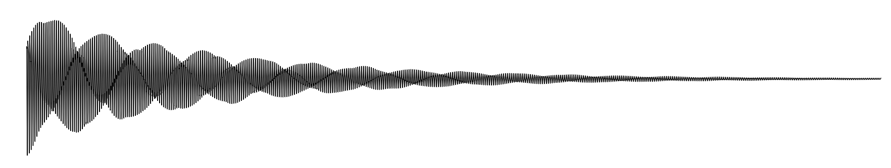


Apresentam uma abordagem simplificada da modelagem física, na medida em que concentram em alguns pontos discretos os cálculos necessários à simulação, aumentando bastante a eficiência computacional do modelo. Conceitualmente, podem ser vistos como uma caso especial do método das diferenças finitas apresentado anteriormente, e a maioria de suas implementações consistem na utilização de delay lines e filtros digitais para a modelagem da propagação da onda(Smith 2006). O modelo também parte da equação da onda, discretizada da forma apresentada no contexto do método das diferenças finitas. O framework puramente analítico, no entanto, é abandonado, em favor de uma interpretação visual baseada na teoria de sinais digitais. A imagem abaixo apresenta a intuição dor trás do método, também para o caso de uma corda fixa em suas extremidades.
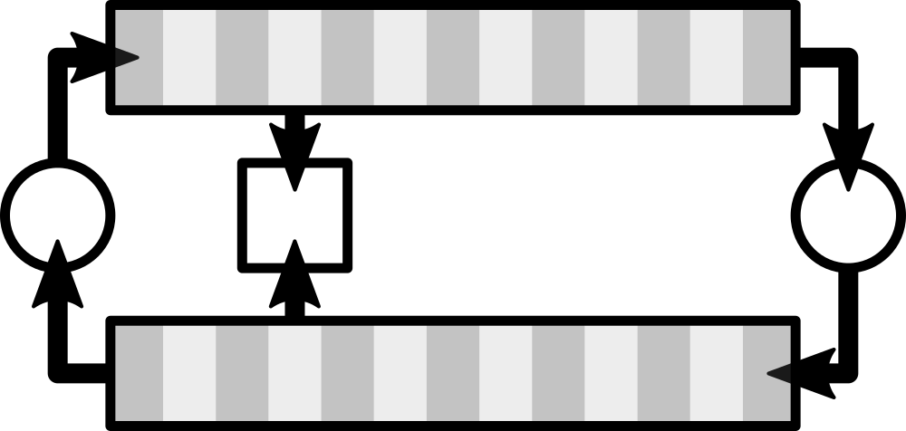
As duas linhas quadriculadas são as chamadas linhas de atraso (delay lines), por onde a onda circula, em uma direção. Ao passar de uma linha pra outra, a onda é espelhada e invertida e todos os cálculos são concatenados (lumped) nesses pontos ou, dependendo da simulação, em apenas um desses pontos, como é o caso da implementação apresentada a seguir. No modelo mais básico, somente um termo de perda é calculado, enquanto implementações mais sofisticadas fazem uso de filtros para emular a rigidez das cordas, entre muitas outras adições possíveis. O modelo pode ser extendido também para emulações bidimensionais e tridimensionais, e presta-se à implementações bastante eficientes, geralmente envolvendo uma estrutura de dados de nominada circular buffer, para a implementação das delay lines.
A seguir, é apresentada uma implementação em Python. Observa-se que a implementação é mais simples do que a do método das diferenças finitas, e mais eficiente, como a tabela a seguir demonstra. Como antes, a versão funcional do código pode ser acessada em resources/Digital_waveguide.py, e uma animação ilustrando a mesma onda anterior, além dos áudios, podem ser acessados em resourcesDigital Waveguide
path = 'Demo Digital Waveguide/'
n = 44100
fps = 44100
frequency = 440
amplitude = 20000
pluck_position = .1
pickup_position = .1
sustain = .99
smoothing = 3
plot = True
L = int(round(fps / (2 * frequency)))
pickup = int(round(L * pickup_position))
asc = int(round(L * pluck_position))
dsc = L - asc
X_asc = np.linspace(0, 1, asc)
X_dsc = np.linspace(0, 1, dsc + 1)[::-1][1: ]
delay_r = np.hstack([X_asc,X_dsc])
delay_l = np.zeros(L)
w = np.zeros(n)
zeros = np.zeros(L)
for i in range(n):
print('step ', i + 1,' of ', n)
w[i] = delay_r[pickup] + delay_l[pickup]
to_l = -1 * np.average(delay_r[-smoothing:]) * sustain # to add in delay_l[L-1] AFTER rolling
delay_r = np.roll(delay_r, 1)
delay_r[0] = -1 * delay_l[0]
delay_l = np.roll(delay_l, -1)
delay_l[L-1] = to_l
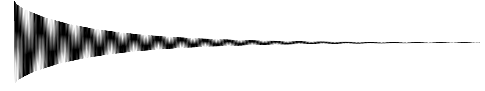


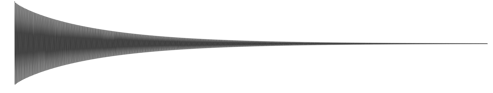
Alguns exemplos de ondas equivalentes foram fornecidos, a fim de basear um julgamento subjetivo. A figura abaixo compara o primeiro frame e último das simulações da corda para os dois métodos.
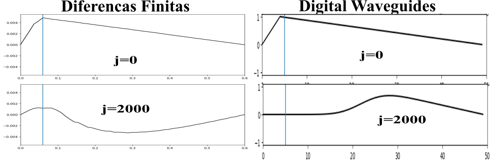
A simulação baseada no método das diferenças finitas tem um caráter mais natural, enquanto é, também, mais propensa a desvios da condição de estabilidade, enquanto a simulação a partir de digital waveguides é mais robusta, porém menos rica. Em relação à eficiências, abaixo são elencados os tempos que foram necessários para a geração dos sons apresentados nos capítulos anteriores. Todos os samples tem framerate igual a 44100 FPS e duração de 1 segundo. Os tempos são apresentados em segundos
| Excitação | Captação | Digital Waveguides | Diferenças Finitas |
|---|---|---|---|
| 0.1 | 0.1 | 13.811148881912231 | 16.9521381855011 |
| 0.1 | 0.5 | 13.020658254623413 | 19.620429277420044 |
| 0.3 | 0.7 | 11.332738161087036 | 24.256462335586548 |
| 0.5 | 0.1 | 12.350087404251099 | 17.89053726196289 |
| 0.5 | 0.5 | 12.122233390808105 | 18.002467393875122 |
A transformada de Fourier, em sua forma contínua, é um tipo de transformada integral, como abaixo:
\[ X(f) = \mathcal{F}(x(t))=\int_{-\infty}^\infty x(t) e^{- 2 \pi f t \ i} dt \]
\[ x(t) = \mathcal{F}^{-1}(X(f))=\int_{-\infty}^\infty X(f) e^{2 \pi f t \ i} df \]
Tendo sido formulada por Fourier, enquanto investigava o fenômeno da transferência de calor TODO:, trata-se de uma das ferramentas mais utilizadas na investigação de sistemas físicos (Lyons 2011), sendo de especial importância no campo de processamento de sinais TODO:.
Esta ferramenta permite que a descrição de um sinal \(x(t)\), em relação ao tempo, seja transformada em uma representação deste mesmo sinal no domínio da frequência, na forma \(X(f)\); \(x(t)\) e \(X(f)\) são denominados um par de Fourier.
Com o advento dos computadores, e a emergência de sinais digitais, uma versão discreta foi formulada TODO:, e pode ser definida como abaixo:
\[ X[m] =\sum_{n=0}^{N-1} x[n] e^{- 2 \pi m n / N ~ i} \] \[ x[n] = \frac{1}{N}\sum_{m=0}^{N-1} X[m] e^{2 \pi m n / N ~ i} \]
onde \(x\) e \(X\) são sequências de N números complexos. Utilizando a fórmula de Euler, \(e^{x ~ i} = \cos(x) + \sin(x)~i\), podemos alterar a definição acima, da forma exponencial, para a trigonométrica, reorganizando o expoente de forma a evidenciar algumas características importantes, na forma abaixo.
\[ X[m] =\sum_{n=0}^{N-1} x[n] \cos \left(m ~ \frac{2 \pi}{N} ~ n \right)- x[n] \sin\left(m ~ \frac{2 \pi}{N} ~ n \right) ~ i \]
A forma acima torna mais fácil uma interpretação geométrica do algoritmo. Para cada valor de \(m ~ \in ~ {0,1,2,...,N-1}\) é feita a multiplicação, elemento a elemento, das N posições do impulso \(x\) com N posições de um onda em forma de cosseno (\(C(m)\)), pura, de “frequência” m, na parte real da equação. Analogamente, em sua parte imaginária, o mesmo processo ocorre: cada posição medida do impulso \(x\) também é multiplicada pela posição equivalente, desta vez, de uma onda em formato de seno(\(S(m)\)), com “frequência” m.
Note-se que esta “frequência”, e por isso a insistência nas aspas, refere-se a quantos ciclos das ondas (\(C(m)\)) e (\(S(m)\)) acima definidas estão contidos no espaço dos N pontos utilizados na transformada e não pode, per-se, ser relacionada à frequência física da onda.
Para o caso de sinais que, no domínio do tempo, consistem de uma sequência finita de números reais, que são os considerados neste trabalho, pode-se, à luz da definição acima, derivar uma interessante e útil propriedade do algoritmo: A descrição do sinal no domínio da frequência é simétrica, de forma que \(X[m] = X^* [N-m]\), com $X^* $ denotando o conjugado complexo de \(X\). Dessa forma, sendo \(N\) par, precisamos de apenas de \(N/2+1\) termos de \(X[m]\) para descrever completamente o pulso no domínio da frequência, enquanto \((N+1)/2\) são suficientes caso \(N\) seja ímpar. A imagem abaixo ilustra este processo.

Trata-se de uma transformada de uma onda composta por 8 samples, que pode ser vista no retangulo inferior da imagens. Os outros retangulos ilustram os respectivos passos e a simetria entre passos equidistantes de n/2. O motivo da simetria, causado pela perda de informação ao tomar apenas alguns pontos, torna-se explícito quando observado do ponto de vista geométrico: os 8 pontos equidistantes tomados como amostra, por exemplo, de uma senoide com frequência igual a 2 coincidem com os retirados de uma senois com frequência igual a 6, já que partes do ciclo são ignorados.
O código em Python a seguir, utilizado para gerar os frames da imagem acima, serve para elucidar numericamente o exposto. É interessante notar que a interpretação geométrica da simetria da transformada discreta de Fourier em ondas puramente reais, até onde alcança o conhecimento do autor, é apresentada pela primeira vez neste trabalho. Cabe observar que implementações mais eficientes, como o algoritmo Fast Fourier Transform (FFT), que os são utilizadas na prática, se utilizam da simetria da transformada para economizar operações TODO:.
import numpy as np
import matplotlib.pyplot as plt
from scipy.fftpack import fft
# Discrete Fourier Transform | Transformada Discreta de Fourier
def DFT(x):
N = x.shape[0]
# cria um vetor de N entradas complexas, preenchido com zeros
X = np.zeros(N, dtype='complex64')
n = np.array([p for p in range(N)]) # n = {0,1,2,...,N-1}
# Versão de "alta resolução" de n, usada para o gráfico apenas
Hn = np.linspace(0, N-1, 100*N) # Hn ={0,...,1,...,2,...,N-1}
for m in range(N): # m E {0,1,2,...,N-1}
C_Si = np.exp(-2 * np.pi * m * n / N * 1j) # C(m) - S(m) i
# Versão de "alta resolução" de C_Si, usada para o gráfico apenas
HC_Si = np.exp(-2 * np.pi * m * Hn / N * 1j)
X[m] = sum(np.multiply(x, C_Si)) # multiplicação termo a termo
# plotando:
plt.figure(1)
plt.suptitle('M =' + str(m), fontsize=16)
plt.subplot(211)
plt.plot(n,x[n].real, 'k:.', label='x[n]')
plt.plot(n,C_Si.real, 'k--o', label='C[n]')
plt.plot(Hn,HC_Si.real, 'k-',label='C[n] ideal')
plt.ylabel('Real', fontsize=14, color='k')
plt.subplot(212)
plt.plot(n,x[n].imag, 'k:.', label='x[n]')
plt.plot(n,C_Si.imag, 'k--o', label='C[n]')
plt.plot(Hn,HC_Si.imag, 'k-',label='C[n] ideal')
plt.ylabel('Imaginário', fontsize=14, color='k')
plt.legend()
plt.savefig('0' + str(m) + '.png', dpi=150)
plt.close('all')
#calcula o erro em relação ao algoritmo da biblioteca Scipy
error = sum((X-fft(x))**2)
print(round(error,5))
# retorna a parte não redundante da transformada
return X[0 : int(N/2+1)] if (N % 2 == 0) else X[0 : int((N+1)/2)]
def s(t):
return np.cos(2 * np.pi * t)
t = np.linspace(0, 1, 8) # 8 pontos entre 0 e 1
x = s(t) # aplica a função ponto a ponto
X = DFT(x)
# plotando:
plt.figure(1)
plt.subplot(211)
plt.ylabel('Real', fontsize=14, color='k')
plt.stem(X.real,linefmt='k--',markerfmt='ko', basefmt='k--')
plt.subplot(212)
plt.stem(X.imag,linefmt='k--',markerfmt='ks', basefmt='k--')
plt.ylabel('Imaginário', fontsize=14, color='k')
plt.savefig('transform.png', dpi=150)
plt.close('all')A equação diferencial que descreve o movimento de uma onda em duas dimensões pode ser derivada a partir das leis de Newton, assumindo algumas simplificações. Considerando a imagem abaixo, e as variáveis que a seguem.
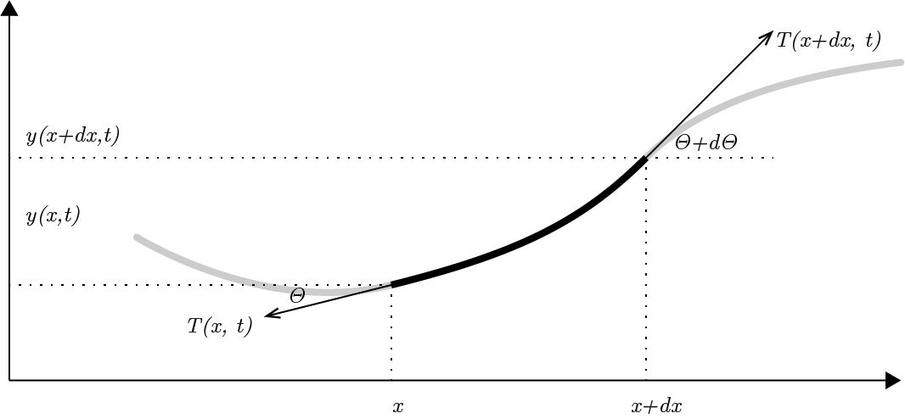
\(y(x,t)\) a distância entre um ponto qualquer de uma corda e o eixo horizontal no tempo \(t\) e na posição \(x\);
\(\theta(x,t)\) o angulo entre a tangente da corda na posição \(x\) e no momento \(t\) e a direção horizontal;
\(\vec{T}(x,t)\) o vetor representando a tensão na corda, no ponto \(x\) e no momento \(t\);
Assumindo ainda que qualquer ponto da corda move-se somente na posição vertical temos que a resultante das forças é também vertical, e pode ser descrita como:
\[F(x,t) = T(x + dx,t)\sin(\theta + d\theta) - T(x,t)\sin(\theta) = T(x + dx,t)\cos(\theta + d\theta) \tan(\theta + d\theta) - T(x,t)\cos(\theta)\tan(\theta)\]
assumindo pequenos deslocamentos verticais da corda em relação à sua posição de equilíbrio, temos que \(\theta \ll 1\) e, portanto \(\cos(\theta + d\theta) \approx \cos(\theta) \approx 1\).
Além disso, lembrando que as tangentes podem ser escritas como a derivada parcial da função de deslocamento em relação à posição, temos:
\[F(x,t) = T(x+d x, t) \left(\frac{\partial y(x+d x)}{\partial x}\right) - T(x, t) \left(\frac{\partial y(x)}{\partial x}\right)\]
Assumindo tensão uniforme e invariável em toda a extensão da corda, condições bastante razoáveis no contexto de instrumentos musicais, podemos escrever \(T(x+d x, t) = T(x, t) = T\) e \(F(x,t)\) toma a forma $ T ( - )$, quando colocamos \(T\) em evidência. Se assumirmos que a massa do segmento infinitesimal da corda pode ser escrita na forma \(\rho dx\), onde \(\rho\) é a massa da corda por unidade de comprimento e \(dx \approx \sqrt{dx^2+dy^2}\) para oscilações pequenas, aplicando a segunda lei de Newton para força resultante na corda temos $F(x,t) = dx $.
Assim, temos $T ( - ) = dx $ que podemos reorganizar como \(\frac{\partial^2 y}{\partial t^2} = \frac{T}{\rho} \frac{\left(\frac{\partial y(x+d x)}{\partial x} - \frac{\partial y(x)}{\partial x}\right)}{dx}\). Notando que o termo à direita é a segunda derivada de \(y\) em relação a \(x\), chegamos à equação da onda:
\[\frac{\partial^2 y(x,t)}{\partial t^2} =\frac{T}{\rho} \frac{\partial^2 y(x,t)}{\partial x^2}\]
onde \(v = \sqrt{\frac{T}{\rho}}\) é a velocidade de propagação da onda na corda.
Uma solução para essa equação foi proposta por d’Alembert, na forma:
\[y(x,t)=F(x+vt)-G(x-vt)\]
Essa equação pode ser intepretada como dois pulsos viajando em sentidos opostos em uma corda infinita com velocidade \(v\).
Em \(t=0\) podemos escrever:
\(y_0(x)=y(x,0)=F(x)-G(x)\)
\(v_0(x)=y'(x,0)=vF'(x)-vG'(x)\)
\(vF(x)-vG(x)= \int_{-\infty}^x v_0(\epsilon) d\epsilon\)
O que nos dá um sistema de equações que, resolvido, nos permite reescrever a equação de d’Alembert em função das condições iniciais de deslocamento e velocidade na corda, como abaixo:
\[y(x,t)= \frac{1}{2} \Big(y_0(x+vt)-y_0(x-vt) \Big) + \frac{1}{2v}\Big(\int_{x-vt}^{x+vt} v_0(\epsilon) d\epsilon \Big)\]
Essa formulação é importante já que em muitos casos pode-se trabalhar apenas com o deslocamento inicial da corda, o que torna o termo à direita zero.
Alternativamente, pelo método da separação de variáveis, pode-se obter a solução em termos de um soma infinita de senoides estacionárias((Gracia and Sanz-Perela 2016)):
\[y(x,t)= \sum_{n=1}^{\infty} \big(a_n \cos(2 \pi f_n t) + b_n \sin(2 \pi f_n t\big) \sin(\frac{n \pi x}{L})\]
onde considera-se uma corda de comprimento \(L\) fixa em suas extremidades. \(f_n\) são os harmonicos da corda e são dados pela equação \(\frac{nv}{2l}\). Além disso, os coeficientes $a_n $ e \(b_n\) são dados pelos coeficiente da trasformada de Fourier das condições iniciais em \(t=0\) (\(y_0(x)\) e \(v_0(x)\)) ((Salsa 2016))
essas duas interpretações dão origem às duas escolas distintas de modelagem acústica, como referido anteriormente, uma focada no domínio do tempo e outra no domínio da frequência.
Repare, no entanto, que ambas as soluções modelam uma corda ideal, não levando em conta a rigidez encontrada em cordas reais.
No domínio do tempo, (Smith 1992) aponta que a rigidez implica no fato de que ondas com diferentes frequências viajam através da corda em velocidades diferentes, relação regida por \(c(w) = c_0(\frac{1+kw^2}{2Kc_0^2})\) com \(k = E \pi r^4 \pi / 4\) onde \(E\) é o modulo de Young e \(r\) é o raio da corda.
No domínio da frequência (Rigaud, David, and Daudet 2013) demonstra que a rigidez pode ser incorporada ao modelo através da substituição do termo que descreve as frequências de cada parcial por \(fn = f_0 \sqrt{1 + Bn^2}\) onde \(f_0 = \frac{1}{2l} \sqrt{\frac{T}{\rho}}\) e \(B = \frac{\pi^3Ed^4}{64Tl^2}\) onde \(E\) é o modulo de Young e \(d\) é o diâmetro da corda.
A maneira mais fácil de acomodar o decaimento devido à forças dissipativas, completando a teoria necessária ao presente trabalho, é modular as amplitudes em ambas as soluções a partir de um termo da forma \(e^{-\alpha t}\)
Define-se uma camada de uma rede neural artificial conforme o diagrama abaixo:
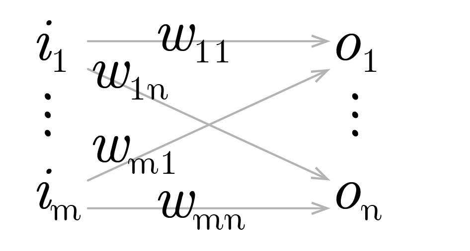
Onde:
\(I_{1 \times m} := [i_1 \dots i_m]\) é um vetor de inputs à rede, e \(T_{1 \times n} := [t_1 \dots t_n]\)um vetor de alvos, de forma que para cada um dos ventores de input há um vetor de alvo correspondente, com a mesma dimensão da saída da camada;
\[ W_{m \times n} := \left[ \begin{matrix} w_{11} & \dots & w_{1n} \\ \vdots & \ddots & \vdots \\ w_{m1} & \dots & w_{mn} \end{matrix} \right] \]
é uma matriz representando os pesos das ligações entre os neurônios de entrada e saída, de forma que \(w_{ij}\) seria o peso da ligação entre o iésimo neurônio de entrada e o jésimo neurônio de saída.
\(A_{1 \times n} := [a_1 \dots a_n] \ |\ a_y := w_{1y}i_1 + \dots + w_{ny}i_n\) representa cada elemento da multiplicação entre o vetor de entrada e os pesos da camada, antes da aplicação, elemento à elemento, da função de ativação;
\(O_{1 \times n} := [o_1 \dots o_n] \ |\ o_y := f(a_y) = f(w_{1y}i_1 + \dots + w_{ny}i_n)\) é um vetor representando as saídas finais da camada;
\(E_{1 \times n} := [e_1 \dots e_n] \ |\ e_y := \varepsilon (o_y, t_y) = \varepsilon (f(w_{1y}i_1 + \dots + w_{ny}i_n) , t_y)\) representa os erros individuais da rede para cada uma das saída motivadas por cada um dos inputs. Cabe notar que \(\varepsilon (o_y, t_y) = (o_y - t_y)^2\) é a forma mais usual de computo dos erros individuais; define-se ainda o escalar \(q := e_1 + \dots + e_n\) como a soma dos erros individuais para cada um dos vetores de erros.
De posse das definições acima, somos capazes de definir de forma compacta, em notação matricial, o movimento de predição (forward pass) de uma camada, como será visto. E, por extensão, de uma rede, na medida em que estas podem ser trivialmente obtidas pela justaposição de um número arbitrários de camadas. O mesmo pensamento, de forma simétrica, presta-se à definição do movimento que atualizará os pesos (backward pass), e que é formalizado na próxima seção. Dessa forma, derivaremos a seguir a forma básica do algoritmo de backpropagation. Além de introduzir o referencial matemático, isso permitirá que as extensões desse algoritmo, como Adam e Adagrad, utilizadas adiante, possam ser mais rigorosamente compreendidas.
Tem-se que o gradiente do tensor de erros em relação a um peso arbitrário pode ser escrito da forma abaixo, com aplicação direta da regra da cadeia, e observando a seguinte notação para uma função qualquer \(h(x)\) : \(\frac{\partial}{\partial x}h(x) = h'(x)\):
\[ \frac{\partial q }{\partial w_{xy}} = \varepsilon' (o_y, t_y) f'(a_y)i_x \quad \text{Eq.:(I)} \]
A matriz de incrementos para cada um dos pesos, a cada iteração, pode ser definida como abaixo, com a adição de uma taxa de aprendizado \(\alpha\) com sinal negativo. Assim é, uma vez que o gradiente acima aponta para sentido de maior crescimento dos erros no espaço dos pesos: minimizar os erros implica, portanto, em mover os pesos em sentido oposto.
\[ \Delta W_{m \times n} := \left[ \begin{matrix} \Delta w_{11} & \dots & \Delta w_{1n} \\ \vdots & \ddots & \vdots \\ \Delta w_{m1} & \dots & \Delta w_{mn} \end{matrix} \right] \ |\ \Delta w_{xy} := - \alpha \frac{\partial q}{\partial w_{xy}} = - \alpha \varepsilon' (o_y, t_y) f'(a_y)i_x \]
Resta definir a forma dos erros nas entradas da rede, permitindo assim que um número arbitrário de camadas sejam conectadas e treinadas. Para tanto, convém considerar uma camada anterior à rede em tela, conceitual, com a seguinte forma e notação:
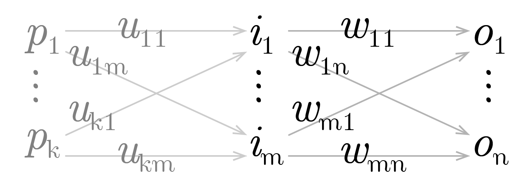
E, de forma análoga:
\[ \begin{align} Z_{1 \times m} :=& [z_1 \dots z_m] \ |\ z_x := u_{1x}p_1 + \dots + u_{kx}p_k \\ I_{1 \times m} =& [i_1 \dots i_m] \ |\ i_x := g(z_x) = g(u_{1x}p_1 + \dots + u_{kx}p_k) \end{align} \]
\[ \begin{align} \frac{\partial q}{\partial u_{rx}} =& [ \varepsilon' (o_1, t_1) f'(a_1) w_{x1} g'(z_x)p_r + \dots + \varepsilon' (o_n, t_n) f'(a_n) w_{xn} g'(z_x)p_r ] \\ =& [ \varepsilon' (o_1, t_1) f'(a_1) w_{x1} + \dots + \varepsilon' (o_n, t_n) f'(a_n) w_{xn} ] g'(z_x)p_r \end{align} \]
Comparando com \(\text{I}\) é fácil observar que o somatório na primeira parte da última expressão corresponde a derivada do erro na primeira equação. Podemos definir, da seguinte forma, o tensor do erro propagado:
\[ \begin{align} E_{1 \times m}^b :=& [e_1^b \dots e_m^b] \ |\ e_x^b := \varepsilon' (o_1, t_1)f'(a_1)w_{x1} + \dots + \varepsilon' (o_n, t_n) f'(a_n)w_{xn} \end{align} \]
Fixamos, dessa forma, todos os termos necessários à uma arquitetura modular: para camadas ocultas, para as quais não há a que se falar em aferirmos diretamente o erro, o mesmo é propagado a partir das camadas posteriores. Em forma vetorial, pode-se sintetizar o algoritmo como abaixo, observando a conveniência de introduzirmos o tensor \(H_{1 \times n}\) para evitar redundância nos cálculos, e a notação \(\odot\) denotando o produto de Hadamard (elemento a elemento) entre dois tensores: \[ \begin{align} O =& f(IW) \\ H_{1 \times n} :=& E \odot f'(A)\\ \Delta W =& -\alpha I^t H= - \alpha I^t (E \odot f'(A)) \\ E^b =& HW^t= (E \odot f'(A)) W^t \end{align} \]
Para a busca da coleção de samples a serem utilizados para o treinamento da rede, algumas características são essenciais. Em primeiro lugar, uma licença permissiva, que não limite a utilização, modificação e posterior divulgação dos resultados obtidos. Além disso, para o caso da bateria, todas as peças de um kit ordinário devem estar presentes, e idealmente, organizadas de maneira inteligível, enquanto que para instrumentos temperados é bastante útil algum tipo de indicação da frequência fundamental de cada um dos samples. É desejável também que, para cada peça, samples representando várias dinâmicas tenham sido gravados, com especial atenção à intensidade com que cada peça é golpeada (velocity). Interessante ainda é a presença dos chamados round-robins: gravações redundantes de cada um dos samples, que apresentam uma imagem de como fatores aleatórios influenciam no som produzido pelo instrumento.
Com isso em mente, procedeu-se à busca, em sites e blogs especializados, de indicações sobre trabalhos disponíveis que pudessem enquadrar-se nas condições citadas. No caso do kit de bateria, dois em especial foram selecionados: o primeiro é um esforço de disponibilizar, através da plataforma Github, uma coleção open source de sons de bateria. Mais detalhes podem ser encontrados em https://github.com/crabacus/the-open-source-drumkit. Trata-se de uma coleção de samples em formato .wav, separadas em pastas e nomeadas de acordo com a intensidade do golpe, e as peças específicas de um kit de bateria convencional, apresentando uma média de 10 articulações por peça. O segundo é um esforço para a elaboração de um instrumento virtual de bateria, como descrito em https://www.drumgizmo.org e apresenta samples gravadas a partir de 5 kits. O número de articulações é bem maior, girando em torno de 20 por kit, e as gravações apresentam múltiplos microfones, com pelo menos um microfone por peça e são, em geral, de melhor qualidade. Além disso, a maioria dos kits adere à licença Creative Commons Attribution 4.0 International que permite o livre uso e adaptação do material disponibilizado em trabalhos derivados.
É natural que a investigação tenha início com uma análise da arquitetura Feed-Forward, com redes compostas apenas de um número arbitrário de camadas totalmente conectadas. Isso possibilita formar uma ideia de como essa ferramenta se comporta, e a subsequente incorporação de novas arquiteturas e formulações na medida em que limites de aplicabilidade forem sendo encontrados. Convém lembrar que o trabalho tem como foco a síntese sonora em tempo real, de forma que o tamanho, no sentido do número de neurons de uma rede neural, e sua complexidade, aspecto relacionado à arquitetura, tornam-se fatores potencialmente limitantes, e passam a requere especial atenção. Redes convolucionais, por exemplo, devem ser tratadas com extrema cautela, por não possuírem um histórico de implementações eficientes.
Em primeiro lugar, procedeu-se ao tratamento dos samples: foram escolhidos, para esta investigação inicial, 5 tambores (os 4 tons disponíveis, e o bumbo esquerdo) disponibilizados no kit Aasimonster, de cada um dos quais 20 dinâmicas (velocity) foram escolhidas. Do total de 100 samples, cada um com 16 canais (1 por microfone utilizado na gravação), foram extraídos os canais pertinentes à cada peça, resultando em 100 samples monofonicos em formato .wav, com framerate de 44100 frames por segundo. As dinâmicas para cada peça foram normalizadas em grupos de 4, de forma a emular 4 samples independentes para 5 níveis diferentes de intensidade por peça. Cada um dos samples foi truncado, para possuir exatamente um segundo de duração, e um efeito fade-off foi aplicado aos samples que estendiam-se além desse intervalo.
Esse conjunto de samples, de forma bastante direta, representou os alvos da rede neural, na forma de um vetor com dimensões 100 x 44100, cada uma de suas linhas consistindo em uma representação digital da onda sonora de cada sample. A conversão foi efetuada utilizando o módulo Pywave da linguagem Python, e cada vetor foi normalizado no espaço [-1,1], e a maior amplitude guardada, de forma a ser reaplicada, depois, aos resultados da rede treinada.
Exemplificando, temos que o sample 154 corresponde ao quarto sample referente à primeira peça (o tom mais agudo), golpeada com intensidade 5. Assim é que os samples 321, 322, 323 e 324, por exemplo, correspondem às quatro variações do mesmo evento: cada um deles representa a terceira peça golpeada com intensidade 2. Os dados de entrada simplesmente refletem essa nomenclatura em um intervalo [0,1].
| Peça | Peça Norm. | Intensidade | Intensidade Norm. | Sample # | Sample # Norm. |
|---|---|---|---|---|---|
| 1 | 0.00 | 1 | 0.00 | 1 | 0.00 |
| 2 | 0.25 | 2 | 0.25 | 2 | 0.33 |
| 3 | 0.50 | 3 | 0.50 | 3 | 0.66 |
| 4 | 0.75 | 4 | 0.75 | 4 | 1.00 |
| 5 | 1.00 | 5 | 1.00 | - | - |
Observa-se, então, que a lógica “convencional” da utilização de redes neurais foi invertida, no melhor do nosso conhecimento, pela primeira vez na literatura: busca-se, de pronto, treinar a rede para a síntese, a partir de inputs arbitrários, de dados predefinidos. Não estamos, por exemplo, como é costumeiro, classificando as diferentes ondas. O que pretende-se é forçar uma associação de cada uma das características da onda à cada campo do input. Esse rationale tem algumas implicações importantes: critérios de validação, embora possíveis de construir, perdem bastante do seu significado e foram deixados de lado em favor de um julgamento subjetivo da qualidade dos samples gerados. Ademais, a habilidade de generalização da rede, embora desejável, não é sempre crucial, ao menos no caso específico das peças discretas de um kit de bateria; para as dinâmicas de cada peça, contudo, sim.
Utilizando os 100 samples processados como descrito, buscou-se investigar os hiperparâmetros mais adequados; essa é uma etapa importante, pois vários parametros aqui definidos serão assumidos como ótimos e utilizados em etapas posteriores, em arquiteturas diferentes. A razão disso é simplesmente a falta de tempo e poder computacional para realizar novos testes dessa magnitude para cada uma das arquiteturas investigadas. A plataforma escolhida foi o Keras, como acima descrito. Em primeiro lugar, é conveniente investigar o melhor algoritmo de atualização dos pesos: embora, conceitualmente, mesmo a versão pura da descida em gradiente, utilizando uma taxa de aprendizado adequada, leve à eventual convergência da rede, na prática a velocidade dessa convergência varia consideravelmente dependendo do método utilizado, e um algoritmo eficiente permite a realização de mais testes no mesmo intervalo de tempo. A literatura disponível, embora esclarecedora, não é unanime ao apontar uma técnica universal, de forma que uma investigação empírica faz-se necessária, e é descrita a seguir.
testou-se, em uma rede com uma camada oculta composta por 100 neurons, em minibatches de 100 inputs e durante 500 épocas os seguintes algoritmos de otimização: descida em gradiente (standard gradient descent - sgd) com taxa de aprendizado (learning rate - lr) de 0,01, o algoritmo experimental RMSProp, os otimizadores Adam, Adagrad, Adadelta, Adamax e Nadam. A função de ativação utilizada em todas as camadas foi a tangente hiperbólica (tanh), e a função de perda foi a média dos quadrados dos erros. Foi tomado cuidado para que todos os testes iniciassem em condições pseudo-randomicas idênticas.
Sgd e Adadelta ofereceram resultados bastante semelhantes, e aquém dos outros. Todos os outros convergiram de forma semelhante, sendo o Adagrad o mais rápido de todos, e Nadam o mais eficaz em diminuição da função de perda (loss).
A comparação por tempo relativo, disponível a partir do Tensorboard, permite visualizar a superioridade do algoritmo Nadam: com 2,57 minutos de treino, o tempo em que o treinamento foi concluído com o algoritmo Adagrad, ele proporcionou o menor valor da função objetivo.
Convém investigar, dessa forma, o comportamento da rede treinada com ambos os algoritmos, já que o parâmetro mais importante é a rapidez com que a rede alcança um nível de erro capaz de gerar samples com qualidade satisfatória. Após essa comparação exploratória, mais profunda, poderemos identificar tanto o valor limite da função de perda, quanto o tempo em que a rede mais eficiente leva para alcançá-lo, utilizando essas informações como parâmetros para investigações posteriores, inclusive de outras arquiteturas.
Fixado os potenciais algoritmos de otimização, procedeu-se a um grid search, para investigar o número de camadas ocultas, respectivos neurons e o efeitos dos batch sizes na rede, tanto em relação ao tempo de treinamento quanto à velocidade (e limite) de convergência.
Testou-se batches de 1, 10, 50, 100, 150 e 200 samples para redes com 25,50,75 e 100 neurônios em cada camada oculta, em um intervalo de 0 a 3 camadas ocultas, gerando um total de 82 redes distintas, que foram treinadas durantes 500 épocas.
Para uma rede sem camadas ocultas, um batch igual a 1 foi o mais efetivo, em 500 épocas, porém o mais lento. batches de 100 e 50 foram os mais rápidos. O impacto no valor final da perda, no entanto, foi desprezível para todos os tamanhos de batches. para um camada oculta com 25 neurons, batches de 100 e 150 neurons ofereceram resultados idênticos, sendo os mais rápidos e mais eficientes.
A partir desse ponto, batches de 100, 150 e 200 começaram a apresentar comportamentos semelhantes. Cabe notar que batches unitários parecem piorar muito o tempo de execução na medida em que o número de neurônios aumenta. temos abaixo os melhores resultados por batch e seus respectivos tempos. Todos eles encontram-se nas redes com 3 camadas ocultas.


| Batches | neurônios por camada oculta | Loss (e-3) | tempo |
|---|---|---|---|
| 200 | 75 | 4,0934 | 2m 48s |
| 100 | 100 | 4,1426 | 3m 41s |
| 150 | 100 | 4,1644 | 3m 17s |
| 1 | 50 | 4,4069 | 2m 28s |
| 10 | 75 | 5,6130 | 8m 15s |
| 50 | 25 | 5,7133 | 2m 24s |
Nesse ponto fica evidente que uma arquitetura formada por 3 camadas ocultas de 75 neurons é suficiente para aprender a representar ondas, e a mais eficiente sob o otimizador Adagrad. O gráfico da função de perda em função do tempo de treinamento torna essa visualização mais fácil.
Para essa etapa batches de 10, 50 e 100 samples foram utilizados; dispensou-se batches unitários, pelo comportamento ineficiente identificado, e os batches acima de 100, já que não introduziram melhorias significativas. Foram testadas, para cada um desses batches, redes com todas as combinações entre 25, 50, 75 e 100 neurônios, até o limite de 3 camadas ocultas. Os resultados são apresentados abaixo, para as arquiteturas com 3 camadas.


| Batches | neurônios por camada oculta | Loss (e-3) | tempo |
|---|---|---|---|
| 10 | 75 100 100 | 0.44632 | 16m 59 s |
| 10 | 50 50 100 | 1.5559 | 15m |
| 100 | 25 75 75 | 2,4384 | 3m 6 s |
| 50 | 75 75 75 | 2.2692 | 3m 36 s |
| 100 | 75 75 75 | 2.2692 | 3m 38 s |
| 50 | 75 100 | 4.9025 | 5m 4s |
Uma rede feedforward com 3 camadas de 75 neurons parece oferecer a arquitetura ideal, com ambos os otimizadores. Esses hisperparametros serviram da base para arquiteturas futuras abordadas neste trabalho.
A performance dos dois, para 2000 steps, é comparada abaixo; também é comparado o impacto da função de ativação softsign, em relação à tanh utilizada até agora.

Podemos ver que a combinação do otimizador Nadam com a função de ativação tanh é a mais eficiente.
Os testes acima proporcionam um insight numérico sobre o comportamento geral da arquitetura feedforward na resolução do problema em tela. Faz-se necessário, contudo, uma análise dos samples gerados pelas redes acima, de forma a entender, do ponto de vista sensorial, sua qualidade.
Além disso, é necessário entender a capacidade de generalização das redes investigadas anteriormente. Tomando como métrica a função de perda final, podemos selecionar algumas redes para investigar os samples por elas gerados.
Analisando a rede com maior função de perda após o treinamento (a rede sem camadas ocultas treinada com Adagrad em batches de 100), a rede escolhida como baseline (75 neurons em cada uma de 3 camadas ocultas, otimizador Nadam, batches de 100) e a rede com a menor perda após o treinamento (a rede com 75, 100 e 100 neurons em suas camadas ocultas, treinada com Nadam em batches de 10), desenvolveremos alguma intuição acerca da relação entre a função de perda e a qualidade percebida dos samples gerados. Os dados são sintetizados abaixo:
| N° | Camadas | Batch | Otimizador | Valor final da função de perda | Parametros |
|---|---|---|---|---|---|
| 01 | 75 100 100 | 10 | Nadam | 4.4632 E-4 | 4,472,100 |
| 02 | 75 75 75 | 100 | Nadam | 2.2692 E-3 | 3,363,300 |
| 03 | 0 | 100 | Adagrad | 7.6421 E-3 | 176,400 |
O formato das ondas dos samples da primeira peça da bateria, segundos round-robins, são mostrados na coluna à esquerda da figura abaixo, enquanto que as outras colunas mostram os resultados das redes. os samples podem ser ouvidos no Github do projeto. Nas linhas em que não há um alvo, os resultados foram extrapolados pelas redes. A primeira rede apresenta um balanço razoável entre acurácia e poder de generalização, enquanto a segunda, com um número um pouco menor de parametros, introduz uma quantidade considerável de ruído ao fim dos samples. A terceira, consideravelmente menor, parece ter aprendido uma representação intermediária entre os exemplos, que varia apenas ligeiramente de peça para peça.

Cabe observar que a primeira rede, com pouco mais de 4 milhões de parâmetros, ocupa-se de cobrir uma família de peças da bateria, e ocupa em disco aproximadamente 50 MB, implicando que um conjunto completo de redes girará em torno de 200MB, na medida em que uma rede ocupe-se dos tambores(incluindo o bumbo), como foi o caso, uma outra da caixa, um terceira do contratempo, e uma quarta para os pratos. Embora o tamanho seja razoável, sobretudo à luz dos instrumentos virtuais comerciais considerados industry standard, como o Superior Drummer 3 da empresa Toontrack, com 230GB, estratégias podem ser utilizadas para aumentar a eficiência da rede.
Isso torna-se especialmente importante se lembrarmos que limitamos a duração dos samples ao tempo de 1 segundo. Para os tambores, caixa e a maior parte das articulações do contratempo, essa duração é razoável. Os pratos, contudo, principalmente quando alvos de um ataque mais forte, costumar apresentar um tempo de decay de aproximadamente 10 segundos, o que demandaria uma rede no mínimo 10 vezes maior.
Em outras palavras, essa arquitetura não se presta à generalização da duração de uma onda sonora, impondo um limite duro à duração máxima que poderá ser gerada, e é inaplicável, ao menos de uma modo direto, à emulação de instrumentos que possuem o som sustentado pela injeção constante de energia da parte do instrumentista, como é o caso dos metais, como trombone, saxofone, etc, e instrumentos da família do violino, onde, respectivamente, o sopro e o arco injetam constantemente energia no sistema, e o mesmo som pode ser mantido por estendidos períodos de tempo.
Os resultados obtidos com a utilização de redes densas encorajam a investigação do comportamento de redes recorrentes, já que possuem o potencial de diminuir o número de parâmetros, apresentando ainda a possibilidade de generalização do tempo de duração dos sons gerados. Um escolha sensível é dividir os alvos em intervalos de 4410 samples, o que equivale a intervalos de 0.1 segundo para o sampling rate(44100 fps) dos arquivos utilizados, o que equivale à resolução temporal mínima do ouvido humano (TODO:). Após alguns testes, a arquitetura recorrente apresentada na figura abaixo foi escolhida.

Com 516 210 parametros treináveis (contra 4 472 100 da rede densa), essa topologia gera resultados semelhantes aos da rede totalmente conectada, tanto em relação à função de perda quanto à capacidade de generalização, além de possuir um tamanho em disco aproximadamente 10 vezes menor. A figura abaixo ilustra as ondas geradas correspondendo aos samples 454 e 554, e a generalização da rede para um sample entre os dois, correspondete à um tom entre o tom mais grave e o bumbo. Esse intervalo foi escolhido justamente por apresentar a maior disparidade, tanto sonora quanto visual, entre as ondas.

Os testes psicoacústicos revelam, porém, que as pequenas descontinuidades entre duas previsões subsequentes (não visíveis na figura acima) traduzem-se em um som de batidas, o que compromete a qualidade do som gerado pela rede.
Uma estratégia adotada para contornar o problema, inspirada no funcionamento das redes convolucionais, foi adotar um overlap entre previsões subsequentes da rede; essa região seria ao fim convolucionada com uma função smoothstep decrescente, da forma \(1 - (3x^2 - 2x^3)\), definida no intervalo entre 0 e 1, a fim de equacionar de forma suave as constribuições dos dois passos da rede, sem introduzir novas descontinuidades. A arquitetura proposta é ilustrada abaixo, e de fato é bastante eficaz em eliminar as descontinuidades diretas entre as previsões.

Os quadrados na região superior esquerda da figura representam os inputs iniciais fornecidos no primeiro passo. Nos passos subsequentes, a rede recebe seus próprios outputs, e a partir deles gera a fração seguinte da onda, de forma recursiva (na prática, como pode ser observado no código do programa no repositório do Github, as entradas recebem o mesmo vetor do input inicial em cada passo, ou um vetor nulo, por limitações técnicas. Após o primeiro passo, no entanto, a rede aprende a ignorar essas entradas adicionais).
Todas as frações de onda geradas, com exceção da última, possuem um overlap com o início da fração seguinte, e a influência de cada uma das previsões no resultado final dá-se a partir dos pesos retirados da função smoothstep: O primeiro ponto da região de overlap é determinado, portanto, inteiramente pela previsão mais antiga enquanto o último o é totalmente pela previsão mais recente. A influência majoritária nos pontos internos passa gradativamente, de maneira suave, da previsão mais antiga para a mais nova.
Contudo, nos resultados alisados persiste ainda um problema relacionado, principalmente, ao transiente no meio onde propaga-se a perturbação, uma etapa bastante mal comportada que ocorre logo após o impulso inicial ser aplicada à corda, membrana ou prato e durante a qual o regime (quasi) periódico não foi ainda alcançado. Isso resulta, do ponto de vista da onda, em uma etapa curta, que pode ser vista no início do gráfico, e que apresenta vibrações aberrantes em frequências diferentes e maiores do que frequência fundamental do sistema.
Essas frequências são capturadas pela rede recorrente, e erroneamente aplicadas no início de cada um dos seus passos (e não só ao primeiro). A figura abaixo, um detalhe aumentado da onda correspondente ao sample 111 onde é capturada a fronteira entre duas previsões subsequentes, ilustra esse efeito na coluna da direita, enquanto as descontinuidades não tratadas podem ser vistas na coluna da esquerda. As consequências sonoras podem ser ouvido no repositório do GitHub preparado para o trabalho e refletem-se em batidas, mais acentuadas no caso das ondas sem o tratamento, com período igual ao tamanho da última camada da rede recorrente sobre o framerate dos samples.

O problema é tratável, e um dos encaminhamentos possíveis, tomando como inspiração o algoritmo dos banded digital waveguides TODO: é distribuir o esforço de previsão entre mais de uma rede, por exemplo, ocupando cada uma de prever uma faixa de frequências. Observou-se, no caso dos samples utilizados até agora, que aproximadamente 4 faixas seriam necessárias, refletindo-se em 4 redes por família de peças, em um total de 16 redes. As exatas fronteiras entre as faixas dependem tanto da arquitetura quanto das características do instrumento a ser emulado e requerem uma investigação empírica bastante extensa que deixou de ser desenvolvida neste trabalho, por limitações de tempo.
Uma outra abordagem seria reservar à uma rede densa a previsão dos transientes, deixando sob responsabilidade de uma rede recorrente o período estacionário, mais bem comportado.
TODO:
Podemos tirar proveito do caráter periódico dos samples e representá-las diretamente no domínio da frequência. Utilizando a transformada de Fourier, como visto, temos à disposição uma forma de representar perfeitamente a onda utilizando um vetor de números complexos com metade da dimensão da onda original, explorando o fato de que estamos nos restringindo a representações temporais no domínio dos números reais.
A princípio, tal transformação de domínio não introduziria maior eficiência á previsão, do ponto de vista computacional, haja vista que números complexos são representados por pares de números reais. Levando em conta, contudo, que o ouvido humano não é capaz de perceber frequências fora da faixa entre 20hz e 20 khz, identificamos uma das vantagens de trabalharmos no domínio das frequências: podemos truncar o resultado da FFT à este intervalo (tomando o cuidado de traduzi-lo em termos das frequências locais da transformada).
Além disso, trata-se de uma representação independente do tempo de duração da onda representada, o que no permite trabalhar com uma arquitetura densa prevendo ondas de tamanhos variados. Mais a frente, serão ilustradas outras vantagens dessa abordagem, levando em conta características físicas do instrumento a ser emulado e propriedades da transformada.
A imagem a seguir compara a distribuição de frequências do som gerado por um prato de bateria e o som gerado pela Dó central de um piano (tecla 49 em um piano padrão), e ajuda a entender a diferença entre os dois instrumentos, e como, mais adiante, poderemos explorar o carater bem comportado dos sons produzidos por intrumentos harmonicos.
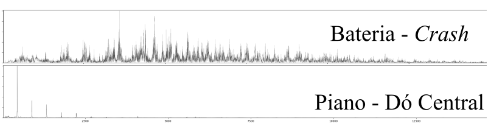
Para a emulação de um kit completo de bateria 4 redes foram treinadas; os smaples foram divididos de acordo com as afinidades de diferentes conjuntos de peças e levando em conta também o grau de expressividade demandado. Por exemplo, somente para a caixa e tons foram utilizados round-robins, devido à alta propensão ao efeito machine-gun quando as peças são utilizadas em rápida sucessão, o que é comum em vários estilos musicais. A arquitetura utilizada é como apresentada na figura abaixo e é uniforme para todas as peças; variações no número de parâmetros ocorrem em função da diferença de duração das ondas no caso dos pratos. Para o caso da caixa, contratempo e dos tambores, incluído o bumbo, cada uma das redes é compostapor 120 008 parâmetros, com um tamanho em disco de aproximadamente 1,4 Mb. Os pratos, por possuírem um som com maior tempo de sustentação, demandaram uma rede com saídas maiores, totalizando 360 008 parametros e quase o triplo do tamanho em disco. Temos assim que todo o sistema possui em torno de 9 Mb de tamanho. Não foram utilizadas funções de ativação, tanto para evitar overfitting quanto para permitir uma implementação menos intensiva, do ponto de vista computacional.

Os resultados são bastante satisfatórios, tanto em termos de acurácia quanto de generalização. A rede não decora nenhuma das distribuições, mas aprende a generaliza-las no espaço bidimensional que tem como eixos o tipo da peça, que reflete a grosso modo uma variação entre agudo e grave e a intensidade da batida. No casa das redes treinadas com o uso de round-robins pode-se pensar em um terceiro eixo no qual a rede generaliza variações percebidas nos samples utilizados para o treinamento. A rigor, o efeito é determinístico, totalmente dependente dos inputs da rede. Pode-se pensar nele, contudo, como um termo que adiciona certa aleatoriedade aos sons gerados, na medida em que pode-se alimentar a rede com um número aleatório entre -1 e 1 para para cada sample gerado. Um efeito colateral desse comportamento geral da rede é que ela não reproduz exatamente nenhum dos samples utilizados no treinamento, e não há garantias do grau de semelhança entre os timbres gerados e os dados originais. Empiricamente, no entanto, observou-se que as características do espectro de frequências aprendidas e generalizadas pela rede imprimem ao resultado um timbre totalmente verossímil; em outras palavras, os tons soam como tons, mas não exatamente com o mesmo timbre que cada uma das peças utilizadas no treinamento, mas como uma amalgama entre elas, assim é com os pratos, e sucessivamente para todas as peças. Quando o esforço é o de emular duas dinâmicas diferentes de uma mesma peça, como é o caso da caixa, em que uma das variáveis é, como para todas as outras peças, a intensidade, e a outra é a centralidade da batida (mais próxima ou afastada do centro da caixa), observa-se resultados ainda mais orgânicos.
Para sons com características harmonicas, de frequências definidas, esse método não oferece bons resultados, na medida em que incorpora as características gerais de cada um dos sons utilizados no treinamento. É curioso observar que, por exemplo, treinando a rede para aprender a interjeição ‘ah’ cantada em diferentes notas, o resultado tem uma qualidade parecida com um coral. As transformadas são exibidas abaixo, tanto dos sons originais quanto das previsões, para a nota mais baixa e mais alta. É possível reparar que a previsão encaminha-se para os picos em ambos os casos, mas incorporando uma grande quantidade de dados indesejáveis.
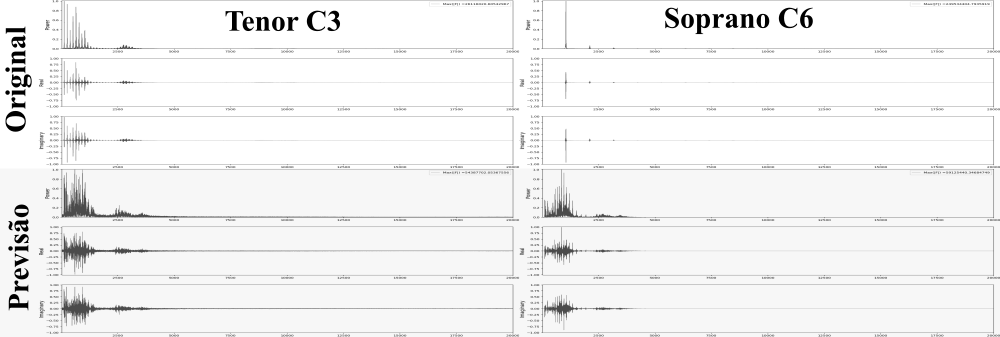
Dessa forma, para a simulação de intrumentos de caráter harmonico, o método apresentado na seção seguinte foi desenvolvido.
Pudemos notar que instrumentos de caráter harmonico possuem um distribuição de frequências bem comportada, consistindo basicamente de alguns picos em sua representação no domínio da frequência. Ademais, para que seu som seja considerado harmonioso, esses picos distribuem-se de forma ordenada; idealmente, são múltiplos inteiros da frequência fundamental da nota reproduzida. É importante notar que o largura da ‘base’ desses padrões de picos é proporcional ao decaimento de uma senoide pura: no caso extremo, uma senoide perfeitamente periódica possui uma distribuição de frequências zero em todos os pontos, com excessão da sua frequência. A figura a seguir ilustra essa relação.
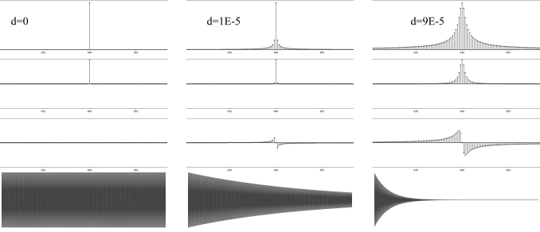
Podemos observar também que o decaimento introduz novas frequências, ao redor da frequência principal, e mudanças de fase na representação no domínio da frequência; observa-se empiricamente que o ‘objetivo’ primordial dessas novas frequencias e fases é reproduzir o efeito de decaimento (ou, de forma mais ampla, o envelope) da onda. Dessa observação, duas intuições importantes podem ser retiradas: A primeira é que, com um grau razoavel de aproximação, podemos descrever um som hamonico gerado por uma excitação impulsiva em função da localização de algumas de suas frequências, suas respectivas intensidades e os seus decaimentos. É natural supor também que a influência das fases dessas ondas pode ser ignorada, o que compra-se empiricamente a partir da resconstrução de ondas com as fases originais e fases nulas ou aleatórias.
De posse disso podemos, então, descartar as informações sobre a fase específica de cada parcial da onda. Esse fenomeno é construtivo (TODO:), de forma que a interposição de ondas não o afeta.
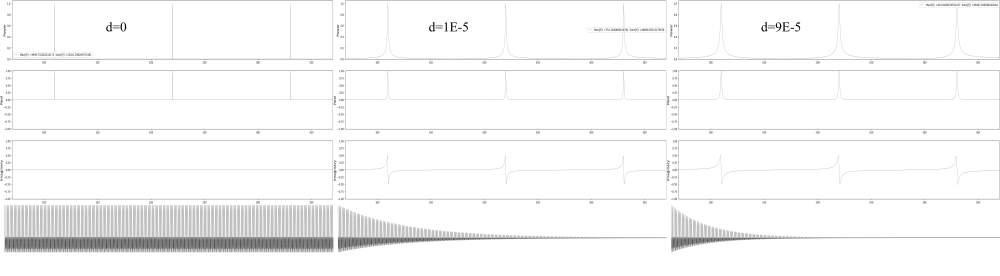
Resta, então, desenvolver um framework para extração das frequências principais de uma onda sonora, suas respectivas almplitudes e seus envelopes, que aqui assumiremos, simplificadamente, da forma exponencial. Se lembrarmos que a transformada de Fourier oferece a intensidade de cada uma das frequências que compõe a onda (ou mesmo a amplitude, se normalizada de forma adequada) pode-se supor que o levantamento das duas primeiras informações sobre a onda torna-se trivial. Algumas dificuldades, contudo, logo apresentam-se: elencando as frequencias de maior intensidade de uma onda arbitrária, rapidamente notamos que muitas delas fazem parte de um mesmo pico. Além disso, as amplitudes referidas na transformada são as amplitudes médias da frequência em toda a onda que, além de não serem diretamente utilizáveis, não oferecem informação sobre o comportamento delas no tempo.
Atacando a questão das frequências, é conveniente lembrar de que, em uma onda pefeitamente harmonica, temos uma frequência fundamental \(f_0\), da qual todas as outras frequências relevantes são múltiplos inteiros, da forma \(f_n = n f_0, n \in \mathbb{Z}^+\). Além disso, a frequência fundamental é, geralmente, a de maior intensidade (mas nem sempre, como ilustrado abaixo). Podemos fazer uso desta informação para encontrar os picos em uma onda. No caso das teclas de um piano, a relação entre as 88 teclas e sua frequência fundamental pode ser encontrada a priori a partir da fórmula \(f_0 = (tecla^2 - 49) / 12 * 440\). Podemos, então, buscar os máximos nos intervalos apropriados. A figura a seguir compara esse algoritmo com o simples levantamento dos maiores valores de intensidade, para uma onda correspondete ao som emitido pela tecla 35 de um piano, da qual busca-se os 30 primeiros picos, correspondendo às 30 primeiras frequências parciais.
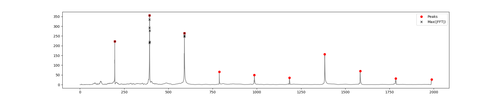
Repara-se que simplesmente elencando os maiores valores, todas as frequências identificadas gravitam em torno as 3 primeiras parciais. Com o algoritmo de busca de picos, as verdadeiras parciais da onda são capturadas, em intervalos bastante próximos à multiplos inteiros de \(f_0\). É interessante observar que a onda ilustrada representa um caso onde a frequência fundamental não corresponde a elevação mais alta.
Uma abordagem possível para a investigação das frequências parciais identificadas seria a aplicação de um método iterativo, seja a partir de um algoritmo de curve fitting, seja com a utilização de redes neurais. Ambos os métodos foram investigados e limitações críticas foram identificadas: O algoritmo iterativo usado para curve fitting não apresenta garantias de convergência. Além disso, o processo iterativo deve ser utilizado para cada uma das ondas, e para cada uma das frequências parciais que deseja-se extrair de cada uma delas. Mesmo tratando-se de uma etapa prévia, que não fará parte do modelo em tempo real, os custos computacionais mostraram-se proibitivos (sobretudo para ondas com vários segundos de duração). De maneira semelhante, o método baseado em redes neurais, embora não deixe de convergir, não apresenta garantias sobre a qualidade dos resultados. Além disso, os dois algoritmos são míopes, no sentido de que, na busca por minimizar suas funções objetivo, geram por vezes senoides com aplitudes e decaimentos aberrantes.
Considerando, de forma aproximada, que todos os decaimentos são exponenciais, é possível estimá-los observando a diferença de intensidade da frequência de interesse entre intervalos arbitrários, como por exemplo a primeira e a segunda metades, da onda. Tomando o cuidado de converter as frequências absolutas para as frequências locais, o somatório \(z(f) = \sum_{t-l/2}^{t+l/2}s[t] ~ e^{-2 \pi t f i } dt\) nos fornece essa informação: trata-se do caso discreto da integral da multiplicação ponto a ponto do sinal de interesse \(s(t)\) com o kernel da transformada de Fourier em função unicamente do tempo \(t\), com \(f\) fixo na frequência local para a qual deseja-se a amplitude (\(z(f)\) fornece também a fase média no intervalo, que não nos é útil, como será visto). Poderíamos utilizar um número arbitrário de intervalos; dois, no entanto, provaram-se suficientes empiricamente.
O decaimento pode ser estimado, então, a partir da igualdade \(d = 2 \ln(a_1 / a_2) / l\). No caso específico de dois intervalos, temos que a amplitude \(a\) é \(a_1 / e^{-d l/ 4} = a_2 / e^{-d 3l/ 4}\). Abaixo são apresentadas as estimativas para as frequências mais presentes nos sons emitidos por algumas teclas de piano, além de um exemplo demonstrativo com um senoide puro.

Cabe observar que nos casos dos sons do piano ilustrados nos 5 primeiros retangulos da image o decaimento estimado é para uma das muitas frequências quecompõe a onda, especificamente a de maior intensidade, que compõe a onda. No último retangulo, o decaimento coincide com o envelope da onda, já que esta é composta por apenas uma frequência. Estamos, desta forma, equipados para introduzir as redes neurais no modelo, de forma a aprender e generalizar o comportamento dos parametros elencados.
Podemos escrever as frequências, tanto a fundamental quanto as parciais, em função das teclas de um piano da seguinte forma: \(f(k,n)=2^{(k-49)/12}440(n+1), k \in {0,1,...88}, n \in {0,1,2,...}\). Esse framework é conveniente para uma vasta gama de instrumentos, já que essas 88 vão desde A0 até C8. Para treinar a rede a partir de qualquer instrumento, basta rotular os samples com a número da tecla equivalente de um piano. Como pode ser ouvido nos exemplos, esse procedimento permitiu o treinamento de um instrumento híbrido, utilizando samples de um baixo acústico, para o registro mais grave, cello para o meio, e violino para o mais agudo; todos esses instrumentos, ao mesmo tempo, cobriram até a tecla 75 do piano, somente.
Como foi visto, essa equação desconsidera as inarmonicidades presentes nos instrumentos, responsáveis por características impoprtantes de seus timbres. Contudo, apresenta uma aproximação inicial bastante razoável que serve tanto para reforçar as características harmonicas básicas quanto para aliviar o esforço de predição da rede, na medida em que podemos adicionar um termo de inarmonicidade na equação acima, a ser aprendido pela rede. Temos, assim: \(f(k,n)=2^{(k-49)/12}440(n+1)i(k,n), k \in {0,1,...88}, n \in {0,1,2,...}\). Considerando tanto frequências fundamentais quanto parciais no espectro audível, teríamos um intervalo de 27 hz, a frequência fundamental de A0 até um pouco mais de 20Khz, correspondendo, por exemplo, à quinta parcial de C8. Escolhendo prever as inarmonicidades, por outro lado, reduzimos o intervalo para o limite entre 0 e 3. Além disso, o comportamento é bastante bem comportado, com caráter ligeiramente exponencial, como ilustrado a seguir, para a primeira tecla de um piano, e a tecla 34, a última a ter todas as parciais no espectro audível.

Este mesmo rationale é aplicado aos decaimentos e amplitudes, que são previstos como uma fração dos valores máximos encontrados em cada uma das teclas (ou notas, mais genericamente, no caso de estarmos treinando um instrumento arbitrário), e encontram-se no intervalo fechado entre 0 e 1. O comportamento das amplitudes e decaimentos máximos, por tecla, é apresentado a seguir, e poderia ser, também, modelado, tanto a partir de redes neurais quanto por meio de modelos matemáticos. Empiricamente, contudo, nota-se que os valores médios são suficientes para um bom resultado. Isso é oportuno, pois reduz a complexidade do modelo final, além de conferir mais generalidade: na imagem abaixo notamos, por exemplo, que há uma descontinuidade nos valores dos decaimentos ocorrendo a partir da tecla 55, que deve-se à mudança de cordas duplas para cordas simples. Esse fenomeno é partircular dos pianos, e, além disso, essa descontinuidade é arbitrária, e varia de piano para piano. Teríamos, então, caso não fizessemos uso da média, formular uma aproximação para cada instrumento treinado (ou treinar uma rede adicional). As amplitudes, embora pareçam possuir uma tendêncial geral de diminuição na medida em que avançamos na escala do piano, possuem comportamento bastante arbritrário.
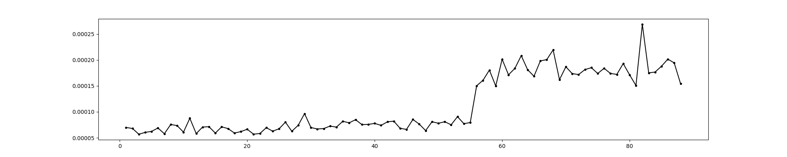

Tendo sido observado que, de posse de uma estimativa do decaimento das frequências parciais, as fases de cada uma delas tem pouco impacto na reconstrução da onda, optou-se por randomizar as fases: Essa decisão confere uma vantagem dupla, diminuindo a quantidade de previsões realizadas pelo modelo e, por conseguinte, o volume de treinamento e posterior processamento necessários econferindo um resultado mais orgânico e variado à sintese executada pelo modelo final, na medida em que nenhuma onda gerada será exatamente igual á qualquer uma outra. Outra opção, menos interessante, seria ainda dar às fases uma valor arbitrário (como zero, por exemplo).
Para a previsão de cada uma das 3 quantidades explicitadas, uma rede densa, com 3 camadas foi utilizada. A arquitetura das 3 redes é identica, com exceção do número de neurons em cada uma das camadas ocultas. Optou-se por utilizar como função de ativação uma versão modificada da tangente hiperbólica, na forma \(a(x) = \tanh(6 * x - 3) / 2 + 1 / 2\) de forma a melhor cobrir o intervalo \([0,1]\). Além disso, o método de inicialização de pesos proposto por (TODO:lecun_normal) ofereceu uma melhora considerável no tempo de convergência das redes, e foi a inicialização utilizado na versão final do modelo, tanto para os neurons quanto para os biases. As redes responsáveis pelas amplitudes e decaimentos possuem 50 neuronios em cada uma das camadas ocultas, e um total de 5 301 parametros treináveis, com aproximadamente 100kb de espaço em disco. Sua arquitetura é apresentada abaixo. Para as frequências, o número de neuronios foi reduzido para 10, para evitar overfitting, o que gera um total de 261 parametros treináveis e aproximadamente metade do tamanho em disco. A figura a seguir compara os dados originais com os produzidos pelo modelo.

Na pasta resources/05 Modelo Final/02_predictions/piano/ do repositório preparado para este trabalho podem ser observadas imagens semlhantes, para outros números de neurons em todas as camadas ocultas, incluindo alguns exemplos em que ocorre overfitting.
Podemos, assim, definir uma nova metodologia voltada à modelagem sonora de instrumentos harmonicos, batizada de Neuro-spectral Synthesis, resumida de maneira esquemática na figura a seguir.
TODO:inserir figura esquemática do modelo final
O modelo final apresenta resultados mais realistas do que as implementações baseadas no modelo de Digital Waveguides e no método das diferenças finitas, e é ao menos uma ordem de grandeza mais eficiente, nas implementações aqui apresentadas. Para efeito de comparação, levando em conta a geração de 5 ondas de 1 segundo, a 44100 FPS, o método proposto foi, em média, 17 vezes mais rápido que o método baseado em Digital Waveguides e 26 vezes mais rápido do que o método das diferenças finitas. A tabela abaixo apresenta os resultados.
| Finite Differences | Digital Waveguides | Neuro-Spectral Synthesis | |
|---|---|---|---|
| 1 | 16.95213819 | 13.81114888 | 0.5896253586 |
| 2 | 19.62042928 | 13.02065825 | 0.8354649544 |
| 3 | 24.25646234 | 11.33273816 | 0.7555158138 |
| 4 | 17.89053726 | 12.3500874 | 0.7475204468 |
| 5 | 18.00246739 | 12.12223339 | 0.7735056877 |
| Média | 19.34440689 | 12.52737322 | 0.7403264523 |
| Desvio Padrão | 2.908692366 | 0.937300851 | 0.09102950916 |
Treinadas as redes, uma implementação final do modelo é bastante simples, e é apresentada abaixo.
key = 66
partials = 100
n = 44100
fps = 44100
P = np.arange(1, partials + 1, 1)
[ma, Ma] = np.genfromtxt('a_m_M.csv', delimiter=',')
[md, Md] = np.genfromtxt('d_m_M.csv', delimiter=',')
[mf, Mf] = np.genfromtxt('f_m_M.csv', delimiter=',')
a_net = K.models.load_model('a_model.H5', {'scaled_tanh': scaled_tanh})
d_net = K.models.load_model('d_model.H5', {'scaled_tanh': scaled_tanh})
f_net = K.models.load_model('f_model.H5', {'scaled_tanh': scaled_tanh})
f0 = np.power(2, (key - 49) / 12) * 440
norm_key = (key - 1) / 87
ipt = np.array([[norm_key, p] for p in np.linspace(0, 1, partials)])
A = np.ndarray.flatten(a_net.predict(ipt)) * ((Ma - ma) + ma) * 5000
D = np.ndarray.flatten(d_net.predict(ipt)) * ((Md - md) + md) * 0.000113026536390889 #average decay
F = (np.ndarray.flatten(f_net.predict(ipt)) * (Mf - mf) + mf) * P * f0
w = np.zeros(n)
for i in range(partials):
print('partial:', i)
ph = np.random.uniform(0, 2 * np.pi)
w += create_signal(n, fps, F[i], ph, A[i], D[i])Uma implementação como essa, funcional, mais os arquivos de definição da arquitetura das redes e seus respectivos pesos estão disponíveis no repositório preparado para este trabalho, em resources/06 Tempo Real/, e ocupam aproximadamente 250kb. No repositório podem ser encontradas alguns áudios gerados pelo modelo.
Sua principal limitação é que todos os parametros a serem manipulados no modelo final devem, antes, ter sido incorporados ao processo de treinamento. Os dois paradigmas de modelagem física utilizados para comparação, tanto o método das diferenças finitas quanto os digital waveguides, permitem alguma manipulação em tempo real, a posteriori, de seus parametros: nos exemplos apresentados, o ponto de excitação pode ser mudado de onda para onda e, a qualquer tempo, o ponto de captação pode ser alterado, até mesmo durante a simulação, refletindo no timbre do som gerado.
Além disso, esses modelos prestam-se à incorporação razoavelmente trivial de uma fonte, contínua ou periódica, de excitação, e podem ser utilizados para a simulação de instrumentos de som continuo, como violinos acionados pelo arco (ao contrario do acionamento pizzicato aqui apresentado) e metais, por exemplo; esse não é o caso do modelo aqui proposto, e constitui uma possibilidade de desenvolvimento futuro interessante.
Uma outra barreira é que o modelo aprende características sonoras a partir de exemplos e não presta-se de forma prática à exploração sonora direta; esta deve ser efetuada a partir de outra ferramenta, e então incorporada ao modelo, à época de seu treinamento.
Para ilustração, algumas músicas criadas com os sons gerados pelos modelos propostos, treinados para emular um kit regular de bateria, um piano e um híbrido entre baixo acústico, cello e violino podem ser ouvidos em soundcloud.com/carlos-tarjano/sets/spectral-neural-synthesis
Do ponto de vista conceitual, o trabalho apresenta alguns insights sobre a transformada discreta de Fourier que, até onde alcança o conhecimento do autor, não foram anteriormente explorados na literatura: A Interpretação geométrica da simetria da transformada discreta de Fourier aplicada à sinais no domínio real, embora não se preste à uma aplicação direta, ajuda no entendimento deste algoritmo e pode vir a ser explorada em desenvolvimentos futuros.
A relação entre o envelope de uma onda, no domínio do tempo, e o formato de seus picos de frequência no domínio da frequência, por outro lado, possibilitou a formulação do modelo fisicamente informado, e pode ser explorada futuramente de maneira mais profunda, potencialmente baseando um método mais acurado de identificação de envelopes em ondas sonoras.
O presente trabalho, ao desenvolver uma nova técnica de modelagem sonora, demonstra o potencial do uso de redes neurais à síntese de áudio, provando sobretudo a possibilidade desse uso em tempo real. O segundo modelo introduzido apresenta resultados mais verossímeis do que o algoritmo de modelagem acústica em tempo real mais utilizado e eficiente encontrado na literatura, à um custo computacional bastante inferior.
O modelo apresentado, ao ser treinado para a simulação de um piano, demonstra também uma gama de aplicações maior do que o algoritmo digital waveguides, mais aplicável à simulação de instrumentos de corda e sopro TODO:.
Uma outra vantagem frente aos modelos baseados em simulação física é que ele pode aprender características importantes do som que tem origem em partes do sistema difíceis de serem modeladas fisicamente, como a influência de ressonadores de geometria complexa.
Fica evidente ainda o potencial sinergético entre os desenvolvimentos na pesquisa sobre a acústica de intrumentos musicais e a utilização de redes neurais para basear modelos destinados à emulação desses instrumentos, ou famílias de instrumentos, específicos.
As possibilidades de desenvolvimentos futuros nesta área de intersecção entre redes neurais e acústica são inúmeras, haja vista a escassez de investigações semelhantes: Seria interessante, por exemplo, utilizar as saídas de um modelo elaborado a partir do método das diferenças finitas, que pode ser formulado de forma a simular características como rigidez, ressonância e vários termos de perda de um dado sistema acústico, ao custo de uma alta demanda de recursos computacionais, para treinar um modelo baseado em digital waveguides que tenha uma rede neural no ponto onde as perdas e demais cálculos são efetuados.
Devido ao alto grau de recursividade do algoritmo digital waveguides, o treinamento à partir do resultado final esperado para o modelo é bastante complexo de ser implementado; os outputs de uma simulação baseada em diferenças finitas, no entanto, são plenamente compatíveis para este treinamento, e a inserção de uma rede neural pode levar a um modelo que retenha ao menos parte da acurácia da simulação pelo método de diferenças finitas, com eficiência computacional próxima, ou até superior, à apresentada pelo algoritmo de digital waveguides.
Relaxar a simplificação adotada durante o trabalho em relação à decaimentos exponenciais é um outro desenvolvimento futuro com potencial interessante: para algumas categorias de som, como a voz humana por exemplo, o envelope do som apresenta importância maior do que as próprias frequências contidas em relação à características como inteligibilidade TODO:.
Estimar os envelopes com a técnica utilizada no segundo modelo, para mais de dois pontos da onda e utilizar uma rede, possivelmente recorrente, para aprender as características desse envelope para um conjunto de sons de determinado instrumento (possivelmente de excitação continuada), ou mesmo a voz humana, constitui uma interessante direção a ser investigada.
Além disso, um algoritmo eficiente de extração de envelope permitiria retomar a abordagem baseada em autoencoders que, alimentados com um senoide pura modelada pelo envelope da onda, teriam maior possibilidade de aprender a reconstruir a onda original de maneira verossímil, em uma abordagem inspirada nas técnicas de transferência de estilo utilizadas no campo da visão de computadores.
Um outro desenvolvimento seria produzir uma implementação em uma linguagem de programação mais eficiente, como C ou C++, somada à uma interface visual e compatibilidade com controladores MIDI pode gerar uma linha de produtos comercialmente viável, a ser comercializado em formato standalone e/ou em formato de plugin VST (Virtual Studio Technology), em que um módulo inicial pode ser oferecido e bancos adicionais, consistindo de novas arquiteturas e pesos, podem ser criados e comercializdos mediante a demanda dos usuários ou o desenvolvimento da técnica.
Ballé, Johannes, Valero Laparra, and Eero P Simoncelli. 2016. “End-to-End Optimized Image Compression.” arXiv Preprint arXiv:1611.01704.
Bensa, Julien, Stefan Bilbao, Richard Kronland-Martinet, Julius O Smith, and Thierry Voinier. 2005. “Computational Modeling of Stiff Piano Strings Using Digital Waveguides and Finite Differences.” Acta Acustica United with Acustica 91 (2). S. Hirzel Verlag: 289–98.
Bensa, Julien, Stefan Bilbao, Richard Kronland-Martinet, and Julius O Smith III. 2003. “The Simulation of Piano String Vibration: From Physical Models to Finite Difference Schemes and Digital Waveguides.” The Journal of the Acoustical Society of America 114 (2). ASA: 1095–1107.
Bishop, Christopher M. 2006. Pattern Recognition and Machine Learning. springer.
Boulanger-Lewandowski, Nicolas, Yoshua Bengio, and Pascal Vincent. 2013. “High-Dimensional Sequence Transduction.” In Acoustics, Speech and Signal Processing (Icassp), 2013 Ieee International Conference on, 3178–82. IEEE.
Boulanger-Lewandowski, Nicolas, Jasha Droppo, Mike Seltzer, and Dong Yu. 2014. “Phone Sequence Modeling with Recurrent Neural Networks.” In Acoustics, Speech and Signal Processing (Icassp), 2014 Ieee International Conference on, 5417–21. IEEE.
Bovermann, Till, Alberto de Campo, Hauke Egermann, Sarah-Indriyati Hardjowirogo, and Stefan Weinzierl. 2016. Musical Instruments in the 21st Century. Springer.
Böck, Sebastian, and Markus Schedl. 2012. “Polyphonic Piano Note Transcription with Recurrent Neural Networks.” In Acoustics, Speech and Signal Processing (Icassp), 2012 Ieee International Conference on, 121–24. IEEE.
Choi, Keunwoo, George Fazekas, and Mark Sandler. 2016. “Automatic Tagging Using Deep Convolutional Neural Networks.” arXiv Preprint arXiv:1606.00298.
Choi, Keunwoo, György Fazekas, Mark Sandler, and Kyunghyun Cho. 2017. “Convolutional Recurrent Neural Networks for Music Classification.” In Acoustics, Speech and Signal Processing (Icassp), 2017 Ieee International Conference on, 2392–6. IEEE.
Costa, Yandre MG, Luiz S Oliveira, and Carlos N Silla. 2017. “An Evaluation of Convolutional Neural Networks for Music Classification Using Spectrograms.” Applied Soft Computing 52. Elsevier: 28–38.
Dalgleish, Mathew, Steve Spencer, and Chris Foster. 2014. “BLURRING the Lines: AN Integrated Compositional Model for Digital Musical Instrument Design.” In. Proceedings of the 9th Conference on Interdisciplinary Musicology. CIM14. Berlin, Germany.
Elman, Jeffrey L. 1990. “Finding Structure in Time.” Cognitive Science 14 (2). Wiley Online Library: 179–211.
Engel, Jesse, Cinjon Resnick, Adam Roberts, Sander Dieleman, Douglas Eck, Karen Simonyan, and Mohammad Norouzi. 2017. “Neural Audio Synthesis of Musical Notes with Wavenet Autoencoders.” arXiv Preprint arXiv:1704.01279.
Forgeard, Marie, Ellen Winner, Andrea Norton, and Gottfried Schlaug. 2008. “Practicing a Musical Instrument in Childhood Is Associated with Enhanced Verbal Ability and Nonverbal Reasoning.” PloS One 3 (10). Public Library of Science: e3566.
Frans, Kevin. 2017. “Outline Colorization Through Tandem Adversarial Networks.” arXiv Preprint arXiv:1704.08834.
Gatys, Leon A, Alexander S Ecker, and Matthias Bethge. 2016. “Image Style Transfer Using Convolutional Neural Networks.” In Proceedings of the Ieee Conference on Computer Vision and Pattern Recognition, 2414–23.
Goldberg, Yoav. 2016. “A Primer on Neural Network Models for Natural Language Processing.” J. Artif. Intell. Res.(JAIR) 57: 345–420.
“Google Ceo Sundar Pichai: Artificial Intelligence More ’Profound Than Electricity or Fire’.” n.d. CNNMoney. Cable News Network. http://money.cnn.com/2018/01/24/technology/sundar-pichai-google-ai-artificial-intelligence/index.html.
Gracia, Xavier, and Tomás Sanz-Perela. 2016. “The Wave Equation for Stiff Strings and Piano Tuning.” arXiv Preprint arXiv:1603.05516.
Graves, Alex, Abdel-rahman Mohamed, and Geoffrey Hinton. 2013. “Speech Recognition with Deep Recurrent Neural Networks.” In Acoustics, Speech and Signal Processing (Icassp), 2013 Ieee International Conference on, 6645–9. IEEE.
Gregor, Karol, Frederic Besse, Danilo Jimenez Rezende, Ivo Danihelka, and Daan Wierstra. 2016. “Towards Conceptual Compression.” In Advances in Neural Information Processing Systems, 3549–57.
Grinstein, Eric, Ngoc Duong, Alexey Ozerov, and Patrick Perez. 2017. “Audio Style Transfer.” arXiv Preprint arXiv:1710.11385.
Hagan, Martin T, Howard B Demuth, Mark H Beale, and others. 1996. Neural Network Design. Vol. 20. Pws Pub. Boston.
He, Lang, Dongmei Jiang, Le Yang, Ercheng Pei, Peng Wu, and Hichem Sahli. 2015. “Multimodal Affective Dimension Prediction Using Deep Bidirectional Long Short-Term Memory Recurrent Neural Networks.” In Proceedings of the 5th International Workshop on Audio/Visual Emotion Challenge, 73–80. ACM.
Hinton, Geoffrey, Li Deng, Dong Yu, George E Dahl, Abdel-rahman Mohamed, Navdeep Jaitly, Andrew Senior, et al. 2012. “Deep Neural Networks for Acoustic Modeling in Speech Recognition: The Shared Views of Four Research Groups.” IEEE Signal Processing Magazine 29 (6). IEEE: 82–97.
Hornik, Kurt. 1991. “Approximation Capabilities of Multilayer Feedforward Networks.” Neural Networks 4 (2). Elsevier: 251–57.
Hornik, Kurt, Maxwell Stinchcombe, and Halbert White. 1989. “Multilayer Feedforward Networks Are Universal Approximators.” Neural Networks 2 (5). Elsevier: 359–66.
Hutchings, P. 2017. “Talking Drums: Generating Drum Grooves with Neural Networks.” arXiv Preprint arXiv:1706.09558.
Hwang, Jeff, and You Zhou. 2016. “Image Colorization with Deep Convolutional Neural Networks.”
Iizuka, Satoshi, Edgar Simo-Serra, and Hiroshi Ishikawa. 2016. “Let There Be Color!: Joint End-to-End Learning of Global and Local Image Priors for Automatic Image Colorization with Simultaneous Classification.” ACM Transactions on Graphics (TOG) 35 (4). ACM: 110.
Isola, Phillip, Jun-Yan Zhu, Tinghui Zhou, and Alexei A Efros. 2016. “Image-to-Image Translation with Conditional Adversarial Networks.” arXiv Preprint arXiv:1611.07004.
Jiang, J. 1999. “Image Compression with Neural Networks–a Survey.” Signal Processing: Image Communication 14 (9). Elsevier: 737–60.
Johnston, Nick, Damien Vincent, David Minnen, Michele Covell, Saurabh Singh, Troy Chinen, Sung Jin Hwang, Joel Shor, and George Toderici. 2017. “Improved Lossy Image Compression with Priming and Spatially Adaptive Bit Rates for Recurrent Networks.” arXiv Preprint arXiv:1703.10114.
Karjalainen, Matti, and Cumhur Erkut. 2004. “Digital Waveguides Versus Finite Difference Structures: Equivalence and Mixed Modeling.” EURASIP Journal on Applied Signal Processing 2004. Hindawi Publishing Corp.: 978–89.
Karpathy, Andrej, George Toderici, Sanketh Shetty, Thomas Leung, Rahul Sukthankar, and Li Fei-Fei. 2014. “Large-Scale Video Classification with Convolutional Neural Networks.” In Proceedings of the Ieee Conference on Computer Vision and Pattern Recognition, 1725–32.
Khorrami, Pooya, Tom Le Paine, Kevin Brady, Charlie Dagli, and Thomas S Huang. 2016. “How Deep Neural Networks Can Improve Emotion Recognition on Video Data.” In Image Processing (Icip), 2016 Ieee International Conference on, 619–23. IEEE.
Kulkarni, Tejas D, William F Whitney, Pushmeet Kohli, and Josh Tenenbaum. 2015. “Deep Convolutional Inverse Graphics Network.” In Advances in Neural Information Processing Systems, 2539–47.
Larsson, Gustav, Michael Maire, and Gregory Shakhnarovich. 2016. “Learning Representations for Automatic Colorization.” In European Conference on Computer Vision, 577–93. Springer.
LeCun, Yann, Léon Bottou, Yoshua Bengio, and Patrick Haffner. 1998. “Gradient-Based Learning Applied to Document Recognition.” Proceedings of the IEEE 86 (11). IEEE: 2278–2324.
Leshno, Moshe, Vladimir Ya Lin, Allan Pinkus, and Shimon Schocken. 1993. “Multilayer Feedforward Networks with a Nonpolynomial Activation Function Can Approximate Any Function.” Neural Networks 6 (6). Elsevier: 861–67.
Lyons, Richard G. 2011. Understanding Digital Signal Processing, 3/E. Pearson Education India.
Maas, Andrew L, Awni Y Hannun, and Andrew Y Ng. 2013. “Rectifier Nonlinearities Improve Neural Network Acoustic Models.” In Proc. ICML. Vol. 30. 1.
McCulloch, Warren S, and Walter Pitts. 1943. “A Logical Calculus of the Ideas Immanent in Nervous Activity.” The Bulletin of Mathematical Biophysics 5 (4). Springer: 115–33.
Minski, Marvin L, and Seymour A Papert. 1969. “Perceptrons: An Introduction to Computational Geometry.” MA: MIT Press, Cambridge.
Mital, Parag K. 2017. “Time Domain Neural Audio Style Transfer.” arXiv Preprint arXiv:1711.11160.
Mizutani, Eiji, Stuart E Dreyfus, and Kenichi Nishio. 2000. “On Derivation of Mlp Backpropagation from the Kelley-Bryson Optimal-Control Gradient Formula and Its Application.” In Neural Networks, 2000. IJCNN 2000, Proceedings of the Ieee-Inns-Enns International Joint Conference on, 2:167–72. IEEE.
Oord, Aaron van den, Nal Kalchbrenner, and Koray Kavukcuoglu. 2016. “Pixel Recurrent Neural Networks.” arXiv Preprint arXiv:1601.06759.
Oord, Aaron van den, Nal Kalchbrenner, Lasse Espeholt, Oriol Vinyals, Alex Graves, and others. 2016. “Conditional Image Generation with Pixelcnn Decoders.” In Advances in Neural Information Processing Systems, 4790–8.
Pang, Yanwei, Manli Sun, Xiaoheng Jiang, and Xuelong Li. 2017. “Convolution in Convolution for Network in Network.” IEEE Transactions on Neural Networks and Learning Systems. IEEE.
Parker, David B. 1985. “Learning Logic.”
Pfalz, Andrew. 2018. “Generating Audio Using Recurrent Neural Networks.”
Rehman, Mehwish, Muhammad Sharif, and Mudassar Raza. 2014. “Image Compression: A Survey.” Research Journal of Applied Sciences, Engineering and Technology 7 (4). Maxwell Science Publishing: 656–72.
Reiffenstein, Tim. 2006. “Codification, Patents and the Geography of Knowledge Transfer in the Electronic Musical Instrument Industry.” The Canadian Geographer/Le Géographe Canadien 50 (3). Wiley Online Library: 298–318.
Rigaud, François, Bertrand David, and Laurent Daudet. 2013. “A Parametric Model and Estimation Techniques for the Inharmonicity and Tuning of the Piano.” The Journal of the Acoustical Society of America 133 (5). ASA: 3107–18.
Rosenblatt, Frank. 1957. The Perceptron, a Perceiving and Recognizing Automaton Project Para. Cornell Aeronautical Laboratory.
———. 1958. “The Perceptron: A Probabilistic Model for Information Storage and Organization in the Brain.” Psychological Review 65 (6). American Psychological Association: 386.
Rumelhart, David E, Geoffrey E Hinton, and Ronald J Williams. 1985. “Learning Internal Representations by Error Propagation.” California Univ San Diego La Jolla Inst for Cognitive Science.
Sainath, Tara N, Brian Kingsbury, George Saon, Hagen Soltau, Abdel-rahman Mohamed, George Dahl, and Bhuvana Ramabhadran. 2015. “Deep Convolutional Neural Networks for Large-Scale Speech Tasks.” Neural Networks 64. Elsevier: 39–48.
Sak, Haşim, Andrew Senior, Kanishka Rao, and Françoise Beaufays. 2015. “Fast and Accurate Recurrent Neural Network Acoustic Models for Speech Recognition.” arXiv Preprint arXiv:1507.06947.
Salsa, Sandro. 2016. Partial Differential Equations in Action: From Modelling to Theory. Vol. 99. Springer.
Sangkloy, Patsorn, Jingwan Lu, Chen Fang, Fisher Yu, and James Hays. 2016. “Scribbler: Controlling Deep Image Synthesis with Sketch and Color.” arXiv Preprint arXiv:1612.00835.
Santurkar, Shibani, David Budden, and Nir Shavit. 2017. “Generative Compression.” arXiv Preprint arXiv:1703.01467.
Sarroff, Andy M, and Michael A Casey. 2014. “Musical Audio Synthesis Using Autoencoding Neural Nets.” In ICMC.
Serra, Xavier. 2007. “State of the Art and Future Directions in Musical Sound Synthesis.” In Multimedia Signal Processing, 2007. MMSP 2007. IEEE 9th Workshop on, 9–12. IEEE.
Sigtia, Siddharth, Emmanouil Benetos, and Simon Dixon. 2016. “An End-to-End Neural Network for Polyphonic Piano Music Transcription.” IEEE/ACM Transactions on Audio, Speech and Language Processing (TASLP) 24 (5). IEEE Press: 927–39.
Smith, JO. 2006. “A Basic Introduction to Digital Waveguide Synthesis (for the Technically Inclined).” Center for Computer Research in Music and Acoustics (CCRMA), Stanford University. Http://Ccrma. Stanford. Edu/~ Jos/Swgt.
Smith, Julius O. 1992. “Physical Modeling Using Digital Waveguides.” Computer Music Journal 16 (4). JSTOR: 74–91.
Socher, Richard. 2014. “Recursive Deep Learning for Natural Language Processing and Computer Vision.” Citeseer.
Southall, Carl, Ryan Stables, and Jason Hockman. 2016. “Automatic Drum Transcription Using Bi-Directional Recurrent Neural Networks.” In ISMIR, 591–97.
Stanley, Kenneth O. 2007. “Compositional Pattern Producing Networks: A Novel Abstraction of Development.” Genetic Programming and Evolvable Machines 8 (2). Springer: 131–62.
Staudt, Pascal. 2016. “Development of a Digital Musical Instrument with Embedded Sound Synthesis.”
Theis, Lucas, and Matthias Bethge. 2015. “Generative Image Modeling Using Spatial Lstms.” In Advances in Neural Information Processing Systems, 1927–35.
Theis, Lucas, Wenzhe Shi, Andrew Cunningham, and Ferenc Huszár. 2017. “Lossy Image Compression with Compressive Autoencoders.” arXiv Preprint arXiv:1703.00395.
Toderici, George, Sean M O’Malley, Sung Jin Hwang, Damien Vincent, David Minnen, Shumeet Baluja, Michele Covell, and Rahul Sukthankar. 2015. “Variable Rate Image Compression with Recurrent Neural Networks.” arXiv Preprint arXiv:1511.06085.
Toderici, George, Damien Vincent, Nick Johnston, Sung Jin Hwang, David Minnen, Joel Shor, and Michele Covell. 2016. “Full Resolution Image Compression with Recurrent Neural Networks.” arXiv Preprint arXiv:1608.05148.
Tuohy, Daniel R, Walter D Potter, and Artificial Intelligence Center. 2006. “An Evolved Neural Network/Hc Hybrid for Tablature Creation in Ga-Based Guitar Arranging.” In ICMC.
Van Den Oord, Aaron, Sander Dieleman, Heiga Zen, Karen Simonyan, Oriol Vinyals, Alex Graves, Nal Kalchbrenner, Andrew Senior, and Koray Kavukcuoglu. 2016. “Wavenet: A Generative Model for Raw Audio.” arXiv Preprint arXiv:1609.03499.
Vaughn, Kathryn. 2000. “Music and Mathematics: Modest Support for the Oft-Claimed Relationship.” Journal of Aesthetic Education 34 (3/4). JSTOR: 149–66.
Veit, Andreas, Michael J Wilber, and Serge Belongie. 2016. “Residual Networks Behave Like Ensembles of Relatively Shallow Networks.” In Advances in Neural Information Processing Systems, 550–58.
Wang, Bo, and Yubin Gao. 2015. “An Image Compression Scheme Based on Fuzzy Neural Network.” TELKOMNIKA (Telecommunication Computing Electronics and Control) 13 (1): 137–45.
Widrow, Bernard, and Marcian E Hoff. 1960. “Adaptive Switching Circuits.” STANFORD UNIV CA STANFORD ELECTRONICS LABS.
Widrow, Bernard, and Michael A Lehr. 1990. “30 Years of Adaptive Neural Networks: Perceptron, Madaline, and Backpropagation.” Proceedings of the IEEE 78 (9). IEEE: 1415–42.
Wu, Zhizheng, and Simon King. 2016. “Investigating Gated Recurrent Networks for Speech Synthesis.” In Acoustics, Speech and Signal Processing (Icassp), 2016 Ieee International Conference on, 5140–4. IEEE.
Xu, Wenduan, Michael Auli, and Stephen Clark. 2015. “CCG Supertagging with a Recurrent Neural Network.” In ACL (2), 250–55.
Yadav, Neha, Anupam Yadav, and Manoj Kumar. 2015. An Introduction to Neural Network Methods for Differential Equations. Springer.
Yang, Yinchong, Denis Krompass, and Volker Tresp. 2017. “Tensor-Train Recurrent Neural Networks for Video Classification.” https://arxiv.org/pdf/1707.01786.pdf.
Zen, Heiga, and Haşim Sak. 2015. “Unidirectional Long Short-Term Memory Recurrent Neural Network with Recurrent Output Layer for Low-Latency Speech Synthesis.” In Acoustics, Speech and Signal Processing (Icassp), 2015 Ieee International Conference on, 4470–4. IEEE.
Zhang, Richard, Phillip Isola, and Alexei A Efros. 2016. “Colorful Image Colorization.” In European Conference on Computer Vision, 649–66. Springer.
Zhang, Ying, Mohammad Pezeshki, Philémon Brakel, Saizheng Zhang, Cesar Laurent Yoshua Bengio, and Aaron Courville. 2017. “Towards End-to-End Speech Recognition with Deep Convolutional Neural Networks.” arXiv Preprint arXiv:1701.02720.
Zhang, Yu, William Chan, and Navdeep Jaitly. 2017. “Very Deep Convolutional Networks for End-to-End Speech Recognition.” In Acoustics, Speech and Signal Processing (Icassp), 2017 Ieee International Conference on, 4845–9. IEEE.
Zhu, Jun-Yan, Philipp Krähenbühl, Eli Shechtman, and Alexei A Efros. 2016. “Generative Visual Manipulation on the Natural Image Manifold.” In European Conference on Computer Vision, 597–613. Springer.
Zweig, Geoffrey, Chengzhu Yu, Jasha Droppo, and Andreas Stolcke. 2017. “Advances in All-Neural Speech Recognition.” In Acoustics, Speech and Signal Processing (Icassp), 2017 Ieee International Conference on, 4805–9. IEEE.